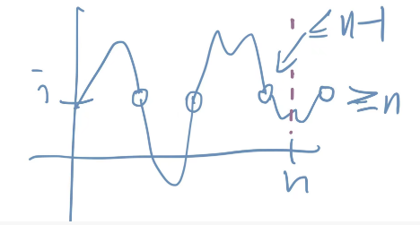
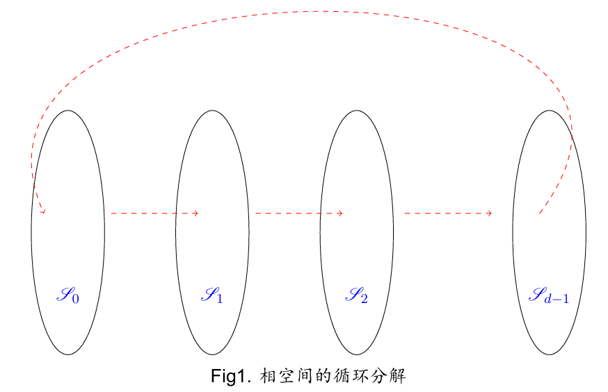
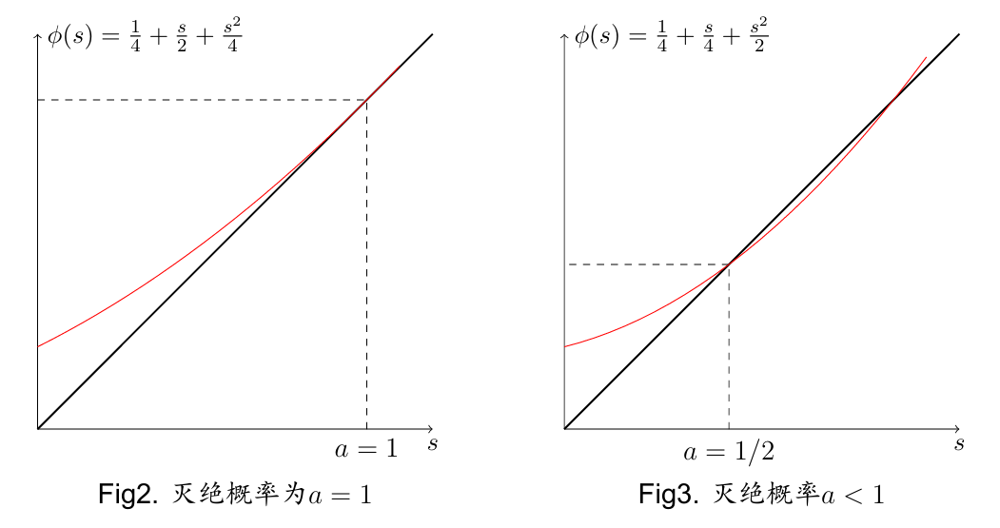
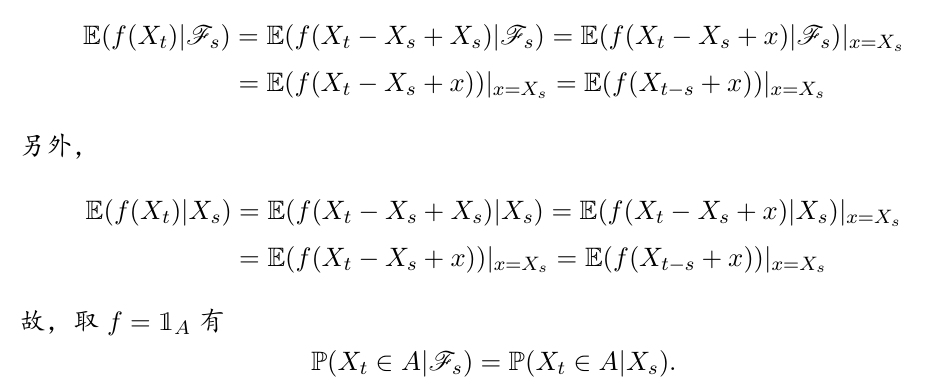
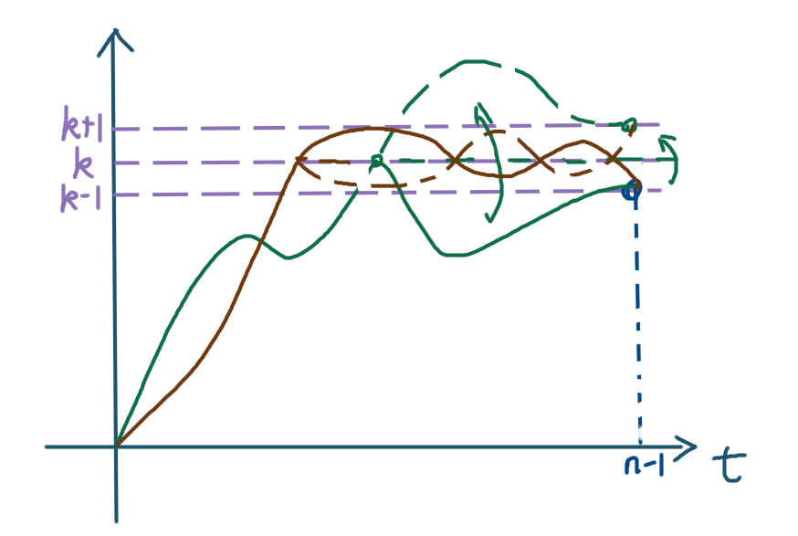

随机过程
抄讲义，同时自己算一算。原作者让老师。
这个上课时间太美滋滋了，没有人会拒绝9:50-11:25既能睡懒觉又能吃中饭的好课的
离散时间马氏链
时齐马氏链：$P(X_n=j|X_0=i_0,...,X_{n-1}=i)=P(X_n=j|X_{n-1}=i)=P(X_1=j|X_0=i)$
上述的$P_{ij}$构成了一步转移矩阵满足每行和为1的矩阵，称为随机矩阵。如果还满足列和为1则称为双随机矩阵
有个我感觉很搞笑的例子，叫M/M/1排队模型：单位时间内到达1位顾客的概率为p，柜台单位时间内一位顾客服务完毕的概率为q，且二者相互独立，则转移矩阵为
$$P_{ij}=q(1-p)\delta(i-1-j)+[(1-q)(1-p)+pq]\delta(i-j)+(1-q)p\delta(i+1-j)\quad i\neq0$$
$$P_{ij}=(1-p)\delta(j)+p\delta(j-1)\quad i=0$$
这个意思就是说柜台工作人员是无记忆性的，无论给你解决到什么程度，一打铃之后就全忘记了从头再来（我看阅读也这样）
###### 常返、暂留
定义
$\tau_i=\inf\{n\ge1|X_n=i\}$表示过程首次返回状态i的时间
状态i常返：$P_i(\tau_i<\infty)=1$
在此基础上，i正常返：$E_i(\tau_i)<\infty$;零常返$E_i(\tau_i)=\infty$
状态i暂留：$P_i(\tau_i<\infty)<1$
记$f_{ij}^{(k)}=P_i(\tau_j=k)$表示从状态i出发恰好在k步到达状态j的概率，$f_{ij}=P(\tau_j<\infty|X_0=i)$表示最终到达概率，也就是对$f_{ij}^{(k)}$的上标无穷求和
$\tau_j(m)=\inf\{n>\tau_j(m-1):X_n=j\}$表示m次访问j的时间
$N_j$是无限时间内到达j状态的次数，下面我们来求一下从i出发在无限时间内到达（也就是初始1次+后期回归）i的次数期望（每n步都有概率回归，将这些概率无穷求和）
$$E_i(N_i)=\sum_{n=0}^\infty(P^n)_{ii}=1+\sum_{n=1}^\infty(P^n)_{ii}=1+\sum_{\substack{ n=1 \\ k\le n}}^\infty f_{ii}^{(k)}(P^{n-k})_{ii}=1+f_{ii}E_i(N_i)$$
其中，最后一个等号用到了交换求和顺序以及马氏链时齐性。因此当Ni期望有限时，可以反解出
$$E_i(N_i)=\frac{1}{1-f_{ii}}$$
Ni期望无界时参考讲义，使用母函数方法（不抄了），最后结果形式上还是上式
所以我们得知：状态i常返 等价于 $E_i(N_i)=\infty$ 等价于 $N_i=\infty$ 等价于 $f_{ii}=1$
这个定义更切合常返这个名字了，总回归次数无界
可达：存在k使得$(P^k)_{ij}>0$则称i可达j，记作$i\to j$；如果还有$j\to i$ 则称ij互通，记作$i\leftrightarrow j$，是一种等价关系。用C(i)表示所有与i互通的状态集合。
状态i本质：$i\to j$时必定也有$j\to i$
同一个类C(i)中的状态要么全部本质要么全部非本质
闭集（注意了，这个不是拓扑那个闭集）：A是闭集如果对每个$i\in A$均有$\sum_{j\in A}P_{ij}=1$（闭集内出发的点无法到达闭集外）
最小闭集：任何一个真子集不是闭集。充要条件是该集合为本质类
马氏链不可约：全空间是最小闭集
无限时间内可达概率与次数之间的关系
若$i\neq j$，则$P_i(N_j=0)=1-f_{ij}$且$P_i(N_j>n)=f_{ij}f_{jj}^n$
若$f_{jj}<1$则$P_i(N_j=\infty)=0$
若$f_{jj}=1$则$P_i(N_j=\infty)=f_{ij}$
$$\mathbb{E}_i(N_j) = \begin{cases}
0, & \text{如果 } f_{ij} = 0, i \neq j; \\
\frac{f_{ij}}{1-f_{jj}}, & \text{如果 } f_{jj} < 1, i \neq j \\
\infty, & \text{如果 } f_{ij} \neq 0, f_{jj} = 1, i \neq j; \\
\frac{1}{1-f_{jj}}, & \text{如果 } i = j
\end{cases}$$
例：d维格点随机游走
d维整数点空间，一次移动且只能移动一个单位长度（向每个方向移动概率均为1/2d）
考虑从原点出发回到原点的概率
d=1时2n步回归概率为$C_{2n}^n\frac{1}{4^n}$，利用$n!\sim\sqrt{2\pi n}n^ne^{-n}$，当n较大时$P^{2n}_{00}\sim\frac{1}{\sqrt{\pi n}}$，总回归次数也就是对n求无穷级数，该级数发散，故原点是常返态
考虑$d\ge2$，但是每个方向依旧是独立的回归，仅需把总步数分配给每个方向计算组合数，总共2n步，我们假设第i个方向两侧各走$k_i$步，下面的组合数意思是先把2n个球标号排序，除掉冗余的每个方向移动步数排列。2n步回归概率为
$$\begin{aligned}
& \sum_{k_1+k_2+\cdots+k_d=n} \frac{(2n)!}{(k_1!k_1!k_2!k_2! \cdots k_d!k_d!)} \left( \frac{1}{2d} \right)^{2n} \\
&= \sum_{k_1+k_2+\cdots+k_d=n} \frac{(2n)!}{(k_1!)^2(k_2!)^2 \cdots (k_d!)^2} \left( \frac{1}{2d} \right)^{2n} .
\end{aligned}$$
d=2时
$$\left( \frac{1}{4} \right)^{2n} \sum_{k=0}^{n} \frac{(2n)!}{(k!)^2 ((n-k)!)^2} = \left( \frac{1}{4} \right)^{2n} \binom{2n}{n} \sum_{k=0}^{n} \binom{n}{k}^2 = \left( \frac{1}{4} \right)^{2n} \binom{2n}{n}^2 \sim \frac{1}{\pi n}$$
其中多次用到了组合数的性质，真的是非常优雅了（真可惜我在最急躁的时候碰上了这么优雅的证明，我就这么急躁的算）所以2维仍然常返
d>2时
$$\left( \frac{1}{2} \right)^{2n} \binom{2n}{n} \sum_{k_1+k_2+\cdots+k_d=n} \frac{1}{d^{2n}} \binom{n}{k_1, k_2, \dots, k_d}^2$$
尾部的大括号可以看作多项式系数（就是二项式中间不止有两项，多项相加之后再幂次这样）
由于$(\frac{1}{d}+...+\frac{1}{d})^n=1$（d个求和），所以$\sum\frac{1}{d^n}\binom{n}{k_1, k_2, \dots, k_d}=1$,简化式子后，我们使用“多项式系数在平均分配时取最大值”来给出级数上界
$$\begin{aligned}
&\mathbb{P}(S_{2n} = 0 | S_0 = 0) \\
\leqslant &\left( \frac{1}{2} \right)^{2n} \frac{1}{d^n} \binom{2n}{n} \max_{k_1+k_2+\cdots+k_d=n} \binom{n}{k_1, k_2, \dots, k_d} \\
\sim &\left( \frac{1}{2} \right)^{2n} \frac{1}{d^n} \binom{2n}{n} \binom{n}{n/d, \dots, n/d} \\
\sim &\text{常数 } n^{-\frac{d}{2}}. \quad (\text{使用 Stirling 公式})
\end{aligned}$$
注意这个$n^{-\frac{d}{2}}$，说明d>2时均为可和的，也就是原点暂留。暂留与常返分界点是2维，这下你知道为什么喝醉的鸟回不到家了
###### 最终到达概率
由其他的状态作为中间的桥梁，我们可以递归地给出多一步转移概率满足的关系
$$f_{ij}^{(n+1)}=\sum_{k\neq j}P_{ik}f_{kj}^{(n)}$$
那么没有上标的终到概率就是将上述求和
$$f_{ij}=P_{ij}+\sum_{n=1}^\infty f_{ij}^{(n+1)}=P_{ij}+\sum_{n=1}^\infty\sum_{k\neq j}P_{ik}f_{kj}^{(n)}=P_{ij}+\sum_{k\neq j}P_{ik}f_{kj}$$
将所有的P看成已知量，f看成未知量，那么这就是关于f的线性方程组。并且f是该方程组的最小非负解
z是定义在态上的一个函数。P是转移矩阵。以下向量不等式指的是分量之间全部满足该不等关系。
过份函数：$Pz\le z$，也即走一步之后z的函数期望变小了
调和函数：$Pz=z$，可以看出P-I对应拉普拉斯算符
**不可约马氏链常反等价条件**
当且仅当存在一个状态j使得线性方程组$z_i=(Pz)_i\quad i\neq j$有界解为常数（所有分量全部一样）
注：下标j是否仍成立不要求
例：不对称反射壁随机游走
一维，位置为正数时向左走的概率为q，向右走的概率为p，p+q=1，位于0时下一步只能走到1.
令j=0，得到方程组$z_i=qz_{i-1}+pz_{i+1}\quad i>1$
化简后$z_i-z_{i-1}=(\frac{1-p}{p})^{i-1}(z_1-z_0)$这是一个二阶差分方程，解由前两项初始条件决定，形式为
$$z_n=\frac{1-a^n}{1-a}(z_1-z_0)+z_0,\quad p\neq\frac{1}{2},\quad a=\frac{1-p}{p}$$
p>1/2时公比a<1，zn有界，取$z_1\neq z_0$即为有界非常数解，原点暂留
解释：向右跑概率更大，所以倾向于一直向右跑没边了
p<1/2时公比a>1，有界解必须$z_1=z_0$，此时所有分量均为$z_0$，是常数，原点常返
解释：向左跑概率更大，但是左边有墙壁所以一直在弹反
p=1/2时$z_n=(n-1)(z_1-z_0)+z_0$有界解必须$z_1=z_0$此时解为常数，常返
###### 生灭链
$$
P = \begin{pmatrix}
r_0 & p_0 & 0 & 0 & \cdots & \cdots \\
q_1 & r_1 & p_1 & 0 & \cdots & \cdots \\
0 & q_2 & r_2 & p_2 & \cdots & \cdots \\
0 & 0 & q_3 & r_3 & p_3 & \cdots \\
\cdots & \cdots & \cdots & \cdots & \cdots & \cdots
\end{pmatrix}
$$
也就是在之前的游走上添加了躺平的选项，并仍然保持行和为1
方程写作
$$z_i=q_iz_{i-1}+r_iz_i+p_iz_{i+1}$$
使用行和为1的性质
$$
p_i(z_{i+1} - z_i) = q_i(z_i - z_{i-1}) \implies z_{i+1} - z_i = \frac{q_i \cdots q_1}{p_i \cdots p_1} (z_1 - z_0)
$$
$$
\implies z_{i+1} = z_1 + \left( \sum_{k=1}^{i} \frac{q_k \cdots q_1}{p_k \cdots p_1} \right) (z_1 - z_0).
$$
有界非常数解意味着级数收敛，换言之常返意味着级数发散。特别的，如果p和q都是常数（下标无关），则有$p\le q$常返，$p>q$非常返，这和先前的反射壁非对称随机游走是一样的，常返与否与躺平概率r无关
###### 判断常返
使用发散过份函数存在性来判断不可约马氏链常返：一个不可约马氏链为常返的充要条件是存在序列$\{z_i,i\in\mathscr{S}\}$使得
$$
\sum_{k \in \mathscr{S}} P_{ik} z_k \leqslant z_i, \quad i \neq 0 \quad \text{且} \quad z_i \longrightarrow \infty.
$$
为了使$i\to\infty$有意义，必须$\mathscr{S}=N_0$。证明过程没来得及抄上...
######## 常返性的Foster-Lyapunov准则
设马氏链不可约，且存在$j\in\mathscr{S}$和一个正函数z满足
$$Az(i)=Pz(i)-z(i)\le 0,\quad i\neq j$$
且对任意$r\le\infty$，$\{i;z(i)\le r\}$是有限集（其实就是上面定理的拓展），则马氏链常返
证明：思路是将一个状态j人为规定为吸收态，证明更改过的马氏链终到概率为1，再证明更改前后终到概率不变。
记$K_N=\{z(i)\le N\}$，定义一个以状态j为吸收态的转移概率$\tilde{P}_{ik}=(1-\delta_{ij})P_{ik}+\delta_{ij}\delta_{jk}$（其他行不改变，但是把j行所有概率浓缩在j一列）
由定理条件，仍然有对任意$n\ge1$有$\sum_{k\in\mathscr{S}}(\tilde{P}^n)_{ik}z_k\le z_i$。这是因为首先考察n=1情况，无论是否行发生修改，均有Pz 接下来我们将状态分为两类，记$K_N=\{z(i)\le N\}$，一类是有限个数的$K_N\cup\{j\}$，另一类是余下的可能个数无限的态。先考察“余下的态”，由于z是正函数所以我们可以设定下确界$\mu_N=\inf_{i\notin(K_N\cup\{j\})}z_i$(注意$\mu_N\ge N$)，看这一部分的部分概率 $$z_i\ge\sum_{k\notin(K_N\cup\{j\})}(\tilde{P}^n)_{ik}z_k\ge\mu_N\sum_{k\notin(K_N\cup\{j\})}(\tilde{P}^n)_{ik}$$ 那么另一部分（有限部分）的部分概率满足 $$1\ge\sum_{k\in(K_N\cup\{j\})}(\tilde{P}^n)_{ik}\ge1-\frac{z_i}{\mu_N}$$ (这还挺分析的) 注意到修改后的转移矩阵是有一个吸收态的，所以任何暂留态$k\neq j$转移概率都收敛到0（$\lim_{n\to\infty}(\tilde{P}^n)_{ik}=0$）然后对于吸收态j，其转移概率恰为前n步初到概率的和（注意，如果j不是吸收态那么这个式子不成立）；另一方面我们知道初到概率只依赖于目标外的转移概率，终点的转移概率不影响，所以有了下面两个关系式 $$(\tilde{P}^n)_{ij}=\sum_{m=1}^n\tilde{f}^{(m)}_{ij},\quad\tilde{f}^{(m)}_{ij}=f^{(m)}_{ij}$$ 再将上上个式子中的转移步数n趋于无穷，求和项中所有非j的项全部消失，仅余 $$1\ge \tilde{f}_{ij}\ge1-\frac{z_i}{\mu_N}$$ 再令$N\to\infty$，此时$\mu_N\to\infty$也会起飞，而zi有界，通过夹逼得到了$\tilde{f}_{ij}=1$，也即$f_{ij}=f_{jj}=1$，马氏链常返 例：泊松分布游走 转移矩阵：$P_{01}=1,P_{ij}=\frac{i^j}{j!}e^{-i}$，可以看出是不可约的 使用上述定理来判断该马氏链是否常返，取$z_n=n$，计算转移矩阵作用后的期望（这就是泊松分布的次数期望） $$\sum P_{ik}z_k=\sum_{k=0}^\infty\frac{i^k}{k!}ke^{-i}=i=z_i$$ （提一个i出来继续使用e^i的泰勒展开）满足定理条件，故马氏链常返 本节很多东西讲义里没写，所以参考《随机过程导论》 (陈木法) ###### 停时 前情提要：$\mathscr{F}$是概率空间中的事件域（σ代数），也就是样本空间所有可测的子集组成的集合 称$\mathscr{F}_T:=\{A\in\mathscr{F}|对于一切t\ge 0,A\cap[T\le t]\in\mathscr{F}_t\}$为T前σ代数 注意到$T\in\mathscr{F}_t$ 设$T:\Omega\to [0,+\infty]$，对于一切$t\ge 0$，有$[T\le t]\in\mathcal{F}_t$那么称T是一个停时（或可选时，或不依赖于将来的随机变量） 例：常值时间是停时、若T是停时，则T+非负t也是停时、若T1 T2是停时则T1+T2也是停时 离散时间一定满足强马氏性，但连续时间不一定 称齐次马氏过程$(X_t)$是强马氏过程，如果 $$ \mathbb{E}[f(X_{T+t}) | \mathscr{F}_T] = \mathbb{E}_{X_T} [f(X_t)] = P(t)f(X_T), \quad t \geqslant 0, $$ 此处 $X_T(\omega) = X_{T(\omega)}(\omega)$。 他的意义是，“现在”不再局限于确定时刻，而是增加了随机性的可能 离散时间马氏链一定有强马氏性，而连续时间不一定 例：原点为吸收态的一维随机游走，向左走概率为q，向右走概率为p，求无穷步之内终到吸收点的概率及平均到达时间 记$H_j$是首达j状态所走的步数 使用母函数方法，从状态1出发（终到0点）$H_0$的母函数 $$ \phi(s) = \mathbb{E}_1 (s^{H_0}) = \sum_{n < \infty} s^n \mathbb{P}_1 (H_0 = n), \quad \text{for } 0 \leqslant s < 1. $$ 那么根据全期望公式，从1出发分为向左走第一步与向右走第一步两种可能 $$\begin{aligned} \phi(s) &= \mathbb{E}_1 (s^{H_0}) = p\mathbb{E}_1 (s^{H_0}|X_1 = 2) + q\mathbb{E}_1 (s^{H_0}|X_1 = 0) \\ &= ps\mathbb{E}_2 (s^{H_0}) + qs, \end{aligned}$$ 下面再计算从2出发首达0的期望，由于一次仅走一步，所以到达0必须路过1，根据这个性质将过程拆成两段；然后从2到1和从1到0是完全对称的，因此从2到0相当于两个从1到0，步数经过一次分配，这样分配的过程恰好可以视作卷积，也即两个级数相乘 $$\begin{aligned} \mathbb{E}_2 \left( s^{H_0} \right) &= \sum_{n=0}^{\infty} s^n \mathbb{P}_2(H_0 = n) \\ &= \sum_{n=0}^{\infty} \sum_{k=0}^{n} s^n \mathbb{P}_2(H_0 = n | H_1 = k) \mathbb{P}_2(H_1 = k) \\ &= \sum_{n=0}^{\infty} \sum_{k=0}^{n} s^n \mathbb{P}_1(H_0 = n - k) \mathbb{P}_1(H_0 = k) = \left[ \mathbb{E}_1(s^{H_0}) \right]^2 = \phi^2(s). \end{aligned}$$ 代回原等式后得到方程 $$ps\phi^2-\phi+qs=0$$ 再考虑边界情况$\phi(0)\le1$(其实用到不发散就够了)，有意义的解是 $$\phi(s)=\frac{1-\sqrt{1-4pqs^2}}{2ps}$$ 把平方根泰勒展开（学物理的来了） $$\begin{aligned} \phi(s) &= \frac{1}{2ps} \left\{ 1 - \left( 1 + \frac{1}{2}(-4pqs^2) + \frac{1}{2} \left( -\frac{1}{2} \right) (-4pqs^2)^2 / 2! + \dots \right) \right\} \\ &= qs + pq^2 s^3 + \dots \\ &= s \mathbb{P}_1(H_0 = 1) + s^2 \mathbb{P}_1(H_0 = 2) + s^3 \mathbb{P}_1(H_0 = 3) + \dots \end{aligned}$$ 这里可以看出没有s的偶数次方项，因为从1终到0一定经历了奇数步 我们的目的是要求所有P(H=n)的无穷和，那么令s=1即可。注意$1-4pq=1-4p+4p^2=(1-2p)^2$所以平方根可以打开 $$\begin{aligned} \mathbb{P}_1 (H_0 < \infty) &= \frac{1 - \sqrt{1 - 4pq}}{2p}= \begin{cases} 1 & \text{if } p \leqslant q \\ q/p & \text{if } p > q \end{cases} \end{aligned}$$ 可以看出向左走概率不小于向右走概率时，终到0点概率为1 下面计算此时平均到达时间 $$E_1(H_0)=\frac{d\phi}{ds}|_{s=1}$$ 我们直接一个把φ满足的二次方程对s求微分，最后反解出$\frac{d\phi}{ds}|_{s=1}$，得到了 $$E_1(H_0)=\frac{1}{q-p}$$ 检验一下：向左走概率q越大，平均到达步数越小，没问题 非负向量$\pi$满足$\pi=\pi P$（特征值为1的左特征向量），则称作马氏链P的不变测度；若$\pi$还是概率向量（归一），则称之为P的平稳分布 这个也可以看作马氏链收敛的最终状态分布。 不变测度一定存在（不一定唯一，需要有更强的限制条件），但不是所有的不变测度都能归一，例如自由随机游走（无边界），取$\pi_j=(p/q)^j$，那么不一定求和收敛 例： $$P = \begin{pmatrix} 1 - \alpha & \alpha \\ \beta & 1 - \beta \end{pmatrix}$$ 平稳分布是$\frac{1}{\beta+\alpha}(\beta,\alpha)$ 带反射壁的随机游走： $$P = \begin{pmatrix} & 0 & 1 & 2 & \cdots & i & i+1 & \cdots \\ 0 & 0 & 1 & 0 & \cdots & 0 & 0 & \cdots \\ 1 & 1-p & 0 & p & \cdots & 0 & 0 & \cdots \\ 2 & 0 & 1-p & 0 & \cdots & 0 & 0 & \cdots \\ \vdots & \vdots & \vdots & \vdots & \cdots & \vdots & \vdots & \cdots \\ i & 0 & 0 & 0 & \cdots & 0 & p & \cdots \\ i+1 & 0 & 0 & 0 & \cdots & 1-p & 0 & \cdots \\ \vdots & \vdots & \vdots & \vdots & \cdots & \vdots & \vdots & \cdots \end{pmatrix}$$ 注意这个第一行第一列只是索引，不应该被包在括号内，也不是P的元素 通过解$\pi=\pi P$这个差分方程得到 $$\pi_1 = \frac{\pi_0}{1 - p}, \quad \pi_2 = \frac{p \pi_0}{(1 - p)^2}, \quad \dots, \quad \pi_i = \frac{p^{i-1} \pi_0}{(1 - p)^i}, \dots$$ 归一化后解得待定的$\pi_0$代回即可得到平稳分布 不可约马氏链：$$P=\begin{pmatrix} \frac{1}{6} & \frac{1}{6} & \frac{1}{6} & \frac{1}{6} & \frac{1}{6} & \frac{1}{6} \\ 0 & \frac{1}{2} & \frac{1}{4} & \frac{1}{4} & 0 & 0 \\ 0 & \frac{1}{2} & 0 & \frac{1}{2} & 0 & 0 \\ 0 & \frac{1}{4} & \frac{1}{4} & \frac{1}{2} & 0 & 0 \\ 0 & 0 & 0 & 0 & \frac{2}{3} & \frac{1}{3} \\ 0 & 0 & 0 & 0 & \frac{1}{4} & \frac{3}{4} \end{pmatrix}$$ 这分为三部分，第一部分是只出不进的0，第二部分是123（独立），第三部分是45（独立），所以平稳分布即为第二部分和第三部分平稳分布的凸组合 $$\{0, 2\alpha/5, \alpha/5, 2\alpha/5, 3\beta/7, 4\beta/7\}$$ 你永远打不过Kscerato 起因：不是所有马氏链都有极限$P^\infty$存在，例如两点之间以1的概率横跳，他就没有极限，所以我们引入了一种较弱的极限 **马氏链弱遍历定理**：P是马氏链转移矩阵，令 $$L^{(n)}=\frac{1}{n}\sum_{k=0}^{n-1}P^k$$ 则下述极限存在 $$\lim_{n\to\infty}L^{(n)}=L$$ 且满足方程 $$PL=LP=L=L^2$$ 证明：可以看出L是n步以下转移矩阵的平均，所以每个元素都处在0与1之间（有界）。那么在列紧空间[0,1]中对于L矩阵中的每个元素都有收敛子列，再使用伟大的对角线法则找到所有元素都收敛也就是矩阵收敛的子列$n_k$： $$L^{(n_k)}\to L$$ 然后注意到$L^{(n)}$是多个P幂次的求和，所以肯定是可以和P交换的，并且使用到错位相减的思想得到了 $$L^{(n)} P = P L^{(n)} = L^{(n)} + \frac{1}{n} (P^n - I)$$ 那么在沿着子列$n_k$趋向无穷的时候，最后一项趋于0，也就是 $$\lim_{k\to\infty}L^{(n_k)}P=L=\lim_{k\to\infty}PL^{(n_k)}=P\lim_{k\to\infty}L^{(n_k)}=PL$$ 倒数第二个等式用了控制收敛定理（PL矩阵积视作以P为测度对L积分，然后积分上用到的定理可以直接搬过来） 下面我们就用这个Fatou引理 $$LP = (\lim_{k \to \infty} L^{(n_k)})P \leqslant \lim_{k \to \infty} L^{(n_k)}P = \lim_{k \to \infty} PL^{(n_k)} = PL = L.$$ 注意到$LP1=L1$，也即LP与L的行和一样（且不超过1），结合上面得出的LP每个元素都不超过L这个信息，可以得出每个元素都是恰好相等的 $$LP=L$$ 至此我们证明了子列极限L满足L=PL=LP，下面还需要证明$L=L^2$，以及极限唯一 L在P的左作用下不变，那么在$L^{(n_k)}$的左作用下一定是不变的（可以把求和形式写出来看），也就是说对任意$n_k$有 $$LL^{(n_k)}=L$$ 取极限后等式仍成立，下面再将行和有限的L视作测度再次使用控制收敛 $$L=\lim_{k\to\infty}LL^{(n_k)}=L\lim_{k\to\infty}L^{(n_k)}=L^2$$ 所以证出来$L=L^2$，还需要证极限唯一 假设子列$m_k$所取到的极限为$\bar{L}$。我们之前证的L在P的左作用下不变还可以继续用，那么 $$LL^{(m_k)}=L$$ 还是一样的用控制收敛取极限得到 $$L=L\bar{L}$$ Similarly, $\bar{L}=\bar{L}L$ 下面考虑右作用，$L^{(m_k)}L=L$，没法直接控制收敛，但是可以用Fatou $$L=\lim_{k\to\infty}(L^{(m_k)}L)\ge\bar{L}L=\bar{L}$$ 这时候再交换L与$\bar{L}$的位置，得到$\bar{L}\ge L\bar{L}=L$两个不等式结合起来最终得到$\bar{L}=L$，极限唯一，证毕 下面是关于L更细致的性质。假设P不可约且常反，则 证：1由PL=L得知构成L的每个列向量z都满足Pz=z，由不可约常反等价条件得知z是常向量，也就是说组成L的每个行向量都相同 2是因为$\pi$是不变测度而P不可约，所以要么全为0要么全非0 3需要证明$\pi$是归一且唯一的 归一：$1\pi=L=L^2=(1\pi)(1\pi)\Rightarrow\sum_i\pi_i=1$ 唯一：假设$\rho$也是P的不变分布，那么$\rho P=\rho$，继续有界收敛$\rho L=\rho\Rightarrow\rho=\rho 1\pi=\pi$，唯一 设从i首次到j的平均到达时间为 $$m_{ij}=E_i(\tau_j)=\sum_{n=1}^\infty nf_{ij}$$ 不可约常返必要条件：$j\in S$固定则$m_{ij}$是下面方程最小非负解 $$\sum_{\mathbb{S} \ni k \neq j} P_{ik} z_k = z_i - 1.$$ 证：直接展开期望定义可以看出满足此方程（就是一个分类讨论的递归式） $$\begin{aligned} m_{ij} &= \mathbb{E}_i(\mathbb{E}_i(\tau_j|X_1)) \\ &= \sum_{k \in \mathbb{S}} P_{ik} \mathbb{E}_i[\tau_j|X_1 = k] \\ &= P_{ij} + \sum_{k \neq j} P_{ik} \mathbb{E}_i[\tau_j|X_1 = k] \\ &= P_{ij} + \sum_{k \neq j} P_{ik}(1 + \mathbb{E}_k[\tau_j]) \\ &= 1 + \sum_{k \neq j} P_{ik} m_{kj}. \end{aligned}$$ 最小非负的证明省略 定理：马氏链不可约常返则正常返$\Leftrightarrow$存在非负数列$z_i$及j使得 $$\begin{cases} \sum_{k \in \mathbb{S}} P_{jk} z_k < \infty \\ \sum_{k \in \mathbb{S}} P_{ik} z_k \leqslant z_i - 1, \quad i \neq j. \end{cases}$$ 证明：($\Rightarrow$)取 $$z_i = \begin{cases} \mathbb{E}_i(\tau_j), & i \neq j; \\ 0, & i = j, \end{cases}$$ 由上个定理可以得知常返时第二个不等式成立，再加上正常返性 $$\infty>E_j(\tau_j)=1+\sum_{k\neq j}P_{jk}z_k\Rightarrow\sum_{k\in S}P_{jk}z_k<\infty$$ 所以第一个不等式成立 ($\Leftarrow$)定义$Y_n=z(X_n)1_{\tau_j>n}$，对$i\neq j$ $$\begin{aligned} E_i [Y_{n+1} | X_0, \dots, X_n] &= E_i \left[ Y_{n+1} \mathbb{1}_{\{n < \tau_j\}} | X_0, \dots, X_n \right] + E_i \left( Y_{n+1} \mathbb{1}_{\{n \geqslant \tau_j\}} | X_0, \dots, X_n \right) \\ &= E_i \left[ Y_{n+1} \mathbb{1}_{\{n < \tau_j\}} | X_0, \dots, X_n \right] \\ &\leqslant E_i \left[ z(X_{n+1}) \mathbb{1}_{\{n < \tau_j\}} | X_0, \dots, X_n \right] \\ &= \mathbb{1}_{\{n < \tau_j\}} E_i [z(X_{n+1}) | X_0, \dots, X_n] \\ &= \mathbb{1}_{\{n < \tau_j\}} E_i [z(X_{n+1}) | X_n] \\ &\leqslant \mathbb{1}_{\{n < \tau_j\}} z(X_n) - \mathbb{1}_{\{n < \tau_j\}}. \end{aligned}$$ 第一个等号是按照n来分类讨论，根据Y的支集只剩下前面一部分，下面这个小于等于是因为丢掉支集$1_{\tau_j>n+1}$扩大了范围，下一步是因为示性函数是可测的所以直接提出来，下一个等号是因为马氏性将久远的历史全部清除，最后一个小于等于是用了题目中给的不等式 因此有 $$E_i [Y_{n+1} | X_0, \dots, X_n] \leqslant 1_{\{n < \tau_j\}} z(X_n) - 1_{\{n < \tau_j\}}$$ 尾巴的1非常关键，累加后代表的是平均返回步数。两边取期望 $$0 \leqslant E_i [Y_{n+1}] \leqslant E_i [Y_n] - P_i(\tau_j > n)$$ 迭代下去 $$0 \leqslant E_i [Y_0] - \sum_{k=0}^n P_i(\tau > k).$$ 得到对所有的$i\neq j$都有 $$E_i[\tau_j]\le z_i$$ 也就是我们得到了不同出发点与终点的到达步数上界，下面直接换成同始终的回归步数即可 $$E_j[\tau_j]=1+\sum_{k\neq j}p_{jk}E_k[\tau_j]\le 1+\sum_{k\neq j}p_{jk}z_k<\infty$$ 所以j正常返 马氏链不可约则以下条件TFAE 注意这个2，从另外一个角度阐述了平稳分布，也就是说分布量是回访次数的倒数，这个可以理解因为回访越多，在平稳时肯定就要赋予更重的密度 证明：设 $$e_{ij} = \mathbb{E}_i \left( \sum_{n=0}^{\tau_i-1} 1_{\{X_n=j\}} \right) = \sum_{n=0}^\infty \mathbb{P}_i(X_n = j, \tau_i > n)$$ 表示马氏链两次访问i之间访问j次数的平均值。然后我们证明这个平均访问次数就是不变测度$u=uP$ 设$\bar{P}_n(i,j)=P_i(X_n=j,\tau_i>n)$也就是从i出发重返i的第n步经过j的概率（之前设的e也就是这个Pbar的求和），那么 $$\sum_j e_{ij} P_{jk} = \sum_j \sum_{n=0}^\infty \overline{P}_n(i, j) P_{jk} = \sum_{n=0}^\infty \sum_j \overline{P}_n(i, j) P_{jk}$$ 当$k\neq i$时 $$\begin{aligned} \sum_j \bar{P}_n(i, j) P_{j k} &= \sum_j P_i\left(X_n=j, \tau_i>n, X_{n+1}=k\right) \\ &= P_i\left(\tau_i>n+1, X_{n+1}=k\right) = \bar{P}_{n+1}(i, k) \end{aligned}$$ 因为$\bar{P}_0(i,k)=0$所以从n+1开始求级数不会漏求什么 $$(u P)_k = \sum_{n=0}^\infty \sum_j \bar{P}_n(i, j) P_{j k} = \sum_{n=0}^\infty \bar{P}_{n+1}(i, k) = \mathbf{e}_{i k} = u_k$$ k=i时 $$(u P)_i = \sum_{n=0}^\infty \sum_j \bar{P}_n(i, j) P_{j i} = \sum_{n=0}^\infty P_i(\tau_i = n + 1) = 1 = \mathbf{e}_{i i} = u_i$$ 不可约常返马氏链在不计常数因子意义下不变测度唯一的证明省略，在新版讲义P42 $\pi_iP_{ij}=\pi_j P_{ji}$对任何状态ij成立，这也就是说从i出发到j的概率流恰好等于j出发到i的概率流 例：之前的生灭链 $$\pi_0=1\quad \pi_i=\frac{p_0p_1...p_{i-1}}{q_1q_2...q_i}$$ 那么这个向量就满足$\pi_iP_{ij}=\pi_j P_{ji}$且$\pi=\pi P$，要使这个向量能够归一化那么必须$i>0$时$\sum\pi_i$收敛 ###### 循环转移矩阵 $$ P=\left(\begin{array}{ccccc} p_{0} & p_{1} & p_{2} & \cdots & p_{m} \\ p_{m} & p_{0} & p_{1} & \cdots & p_{m-1} \\ p_{m-1} & p_{m} & p_{0} & \cdots & p_{m-2} \\ \vdots & \vdots & \vdots & \cdots & \vdots \\ p_{1} & p_{2} & p_{3} & \cdots & p_{0} \end{array}\right) $$ 那其实每个位置都是等价的，良好对称性，平稳分布是1/(m+1)常向量 ###### M/G/1排队模型 这个修改过的排队模型就没有之前那个好笑了，它更正常一些 顾客到达分布服从Poisson流，即在 $[0, t]$ 时间内，到达的顾客数 $\{N_t = k\}$ 的概率为 $e^{-\lambda t} \frac{(\lambda t)^k}{k!}$。 设每个顾客的服务时间服从分布 $F$，如设 $Z_i \stackrel{\text{i.i.d.}}{=} Z$ 为顾客的服务时间且相互独立，则 $\mathbb{P}(Z \leqslant x) = F(x)$。 用 $\xi_i$ 表示第 $i$ 个顾客服务期间所到达的顾客数目 $(i = 0, 1, \dots)$ 且 $$ \begin{aligned} \mathbb{P}(\xi_i = k) &= \mathbb{P}(\xi_i = k) = \mathbb{P}(N_{Z_i} = k) = \mathbb{E}(\mathbb{1}_{N_{Z_i}=k}) \\ &= \mathbb{E}(\mathbb{E}(\mathbb{1}_{N_{Z_i}=k} | Z_i)) = \int_0^\infty \mathbb{E}(\mathbb{1}_{N_{Z_i}=k} | Z_i = t) \mathrm{d}F(t) \end{aligned} $$ 并且顾客的到达与柜台的服务是独立的（不过如果是我的话，我更想去服务的快一点的柜台） $$\begin{aligned} &= \int_0^\infty \mathbb{E}(\mathbb{1}_{N_t=k} | Z_i = t) \mathrm{d} F(t) = \int_0^\infty \mathbb{E}(\mathbb{1}_{N_t=k}) \mathrm{d} F(t) \\ &= \int_0^\infty e^{-\lambda t} \frac{(\lambda t)^k}{k!} \mathrm{d} F(t) = a_k, \quad k = 0, 1, \dots \end{aligned}$$ 令$X_n$表示第n个顾客进入服务时队列等待的人数，这个人数的增量完全取决于当前这个人要用多少服务时间 $$X_{n+1}=(X_n-1)^++\xi_{n+1}$$ 这个上标加号意思是如果括号内的结果是负数那么这个括号就取0，相当于一个快速的分类讨论记法 然后下面这个转移概率要注意一点，经过这个单位时间后，一定会有一个人被服务完，所以你得再多来一个人 $$\begin{aligned} &P_{00} = a_0 + a_1, \quad \text{无客人到达或到达 1 个} \\ &P_{0k} = a_{k+1}, \quad k \geqslant 1, \quad \text{从 0 到 } k \text{ 必需到达 } k+1 \text{ 人, 其它类似} \\ &P_{j(j-1+k)} = a_k, \quad \text{如果 } j \geqslant 1. \end{aligned}$$ 设$0 证明来的人比服务的人更快的时候($\mu>1$)马氏链非常返，我们说明方程Pz=z有有界非常数解$z_i=c^i$ $$\sum_{j \geqslant 0} P_{i j} c^{j}=\sum_{j \geqslant i-1} a_{j-i+1} c^{j}=c^{i},$$ $$c=\sum_{j \geqslant i-1} a_{j-i+1} c^{j-i+1}=\sum_{k=0} a_{k} c^{k}=f(c) $$ 注意到f''(c)>0且f'(1)>1，所以f(c)在定义域内有不动点，这也就是要找的解 若$\mu\le1$，那么找了个发散的过份函数$z_i=i$ $$\sum_{j \in \mathscr{S}} j P_{i j}=\sum_{j \geqslant i-1} j a_{j-i+1}=\sum_{j \geqslant i-1}(j-i+1) a_{j-i+1}+i-1=\mu-1+i \leqslant i .$$ 说明马氏链常返 若$\mu<1$，则取$z_i=\frac{i}{1-\mu}$，相似的得到 $$\sum_{j \in \mathscr{S}} P_{i j} z_{j}=z_{i}-1 .$$ $$\sum_{k \in \mathscr{S}} P_{0 k} z_{k}<\infty .$$ 说明马氏链正常返 进一步的，我们可以证明正常返的充要条件是$\mu<1$，在这里就不证了 但是在马氏链乍一看没有独立随机变量，不过马氏链有“无记忆性”，把马氏链的过程分成一节一节的，每一节都像是独立同分布 定义$\tau_i(n)$是第n次到位置i的步数，接下来可以定义两次回归的时间间隔 $$ \rho_{i}(m)=\left\{\begin{array}{cc} \tau_{i}(m)-\tau_{i}(m-1), & \tau_{i}(m-1)<\infty ; \\ 0, & \text { 否则. } \end{array}\right. $$ 接下来我们证明对于固定的i不同的m，$\rho_i(m)$是独立同分布的 独立性呢其实就是借助马氏链的无记忆性把条件慢慢脱掉 $$ \begin{aligned} & \mathbb{P}_i(\rho_i(1)=n_1, \cdots, \rho_i(k)=n_k) \\ = & P_i(\tau_i(1)=n_1, \cdots, \tau_i(k-1)=n_1+n_2+\cdots+n_{k-1}, \tau_i(k)=n_1+n_2+\cdots+n_k). \end{aligned} $$ 把去掉最后一次回归的时间称作A $$ A = \{\tau_i(1) = n_1, \dots, \tau_i(k-1) = n_1 + n_2 + \dots + n_{k-1}\} $$ 只要会脱掉一次回归，那么余下的回归也可以按照这样递归的方式慢慢分解开来 $$ \begin{aligned} & \mathbb{P}_i(\rho_i(1) = n_1, \cdots, \rho_i(k) = n_k) \\ = & \mathbb{P}_i(\tau_i(k) = n_1 + n_2 + \cdots + n_k | A) \mathbb{P}(A) \\ = & \mathbb{P}_i(\tau_i(k) = n_1 + n_2 + \cdots + n_k | A \cap \{X_{n_1 + \cdots + n_{k-1}} = i\}) \mathbb{P}(A) \\ = & P_i(X_{n_1 + \cdots + n_k} = i, X_m \neq i, n_1 + \cdots + n_{k-1} < m < n_1 + \cdots + n_k | X_{n_1 + \cdots + n_{k-1}} = i) \mathbb{P}(A) \\ = & \mathbb{P}_i(X_{n_k} = i, X_m \neq i, 0 < m < n_k) \mathbb{P}(A) \quad (\text{时齐马氏性}) \\ = & \mathbb{P}_i(\rho_i(1) = n_k) \mathbb{P}(A) = \cdots = \mathbb{P}_i(\rho_i(1) = n_k) \times \mathbb{P}(\rho_i(1) = n_{k-1}) \times \cdots \times \mathbb{P}_i(\rho_i(1) = n_1). \end{aligned} $$ 所以我们证明了所有$\rho_i(k)$与$\rho_i(1)$独立同分布 ###### 遍历定理 P为不可约马氏链，X为马氏过程，$N_i(n)$是到n时刻为止访问i的总次数，则 $$ \mathbb{P} \left( \frac{N_i(n)}{n} \longrightarrow \frac{1}{m_{ii}}, \text{当 } n \to \infty \right) = 1. $$ 证明：首先暂留肯定成立，下设常返，由于我们考虑的是极限情况，所以可以直接看作从i出发，接下来我们用返回次数作为界定工具，给一段时间的平均返回N/n夹逼  $$\tau_i(N_i(n)) = \rho_i(1) + \cdots + \rho_i(N_i(n)) \leqslant n - 1$$ 在下一次返回 $$\tau_i(N_i(n) + 1) = \rho_i(1) + \dots + \rho_i(N_i(n) + 1) \geqslant n,$$ 那么有 $$\frac{\rho_i(1) + \cdots + \rho_i(N_i(n))}{N_i(n)} \leqslant \frac{n}{N_i(n)} \leqslant \frac{\rho_i(1) + \cdots + \rho_i(N_i(n) + 1)}{N_i(n) + 1} \frac{N_i(n) + 1}{N_i(n)}.$$ 考虑到$m_{ii}=E_i[\tau_i]$是平均回归步数，两边对n取极限时相当于两边对所有的n都求和了，最后就根据强大数定律得到这个$m_{ii}$ $$\mathbb{P} \left( \frac{N_i(n)}{n} \longrightarrow \frac{1}{m_{ii}} = \pi_i, \text{ 当 } n \to \infty \right) = 1.$$ 对于非正常返，$m_{ii}=\infty$，但是可以证明 $$\frac{1}{n}(\rho_i(1) + \rho_i(2) + \cdots + \rho_i(n)) \to \infty.$$ 定理仍成立 一般化：推广到任意可积函数 f是S上$\pi$可积函数，$\pi(f)=\sum_{i\in S}\pi_if(i)<\infty$，则对任意初始分布$\nu$有 $$ \mathbb{P}_\nu\left( \frac{1}{n} \sum_{k=0}^{n-1} f(X_k) \to \pi(f), \text{ 当 } n \to \infty \right) = 1. $$ 也就是说该函数在每个时刻的取值求和极限a.s收敛到平稳分布 ###### 马氏链中心极限定理 设马氏链不可约正常返，$f:\mathscr{S}\to\mathbb{R},\pi(|f|)<\infty$令去中心化的$\bar{f}=f-\pi(f)$ 如果下面这个式子收敛，那么定义$\gamma_f$如下 $$ \gamma_f^2 = 2\sum_{l=1}^\infty E_\pi\left(\bar{f}(X_0)\bar{f}(X_l)\right) + E_\pi\left(\bar{f}^2(X_0)\right). $$ $E_\pi$表示在平稳分布意义下求均值。如果$\gamma_f^2>0$，那么无论从任何一个状态出发都有 $$\boxed{\frac{1}{\sqrt{n\gamma_f^2}}\sum_{m=0}^n \bar{f}(X_m)\to N(0,1)}$$ 证明：我们先前已经证明，两次回归之间的马氏链运动是独立同分布变量（换言之马氏链的行为与当前进行到第几步无关），现在将这个iid的变量拿出来算一下方差之后就可以带入经典的iid中心极限定理，整理一下就是上式了 令$Y_m^f=\sum_{l=\tau_i(m-1)}^{\tau_i(m)-1}f(X_l),\quad m\ge1$，它代表着（以回归i点作为区分）第m段的f和，不同的m独立且对应着同一个分布 希望计算这个分布的方差，那首先就取m=1，计算第一段f和，注意$\tau_i=\tau_i(1)$表示首次回归i点的步数。为了方便，记状态集$B=\{X_l:0\le l\le\tau_i-1\}$(也是个随机变量) $$\begin{align} &E_i\left(\left(\sum_{l=0}^{\tau_i-1}\bar{f}(X_l)\right)^2\right)=E_i\left(\left(\sum_{k\in B}\bar{f}(k)\right)\left(\sum_{j\in B}\bar{f}(j)\right)\right) \\&=E_i\left(2\sum_{\tau_k< \tau_j,k,j\in S}\bar{f}(k)\bar{f}(j)+\sum_{k\in B}\bar{f}^2(k)\right) \\&=2\sum_{k,j\in S}\bar{f}(k)\bar{f}(j)\sum_{m=1}^\infty\sum_{l=m+1}^\infty P_i(m,l\le\tau_i;X_m=k,X_l=j) \\&+\sum_{k\in S}\bar{f}^2(k)\sum_{m=1}^\infty P_i(m\le\tau_i;X_m=k) \end{align}$$ 回忆一下 $$e_{ij} = \mathbb{E}_i \left( \sum_{n=0}^{\tau_i-1} 1_{\{X_n=j\}} \right) = \sum_{n=0}^\infty \mathbb{P}_i(X_n = j, \tau_i > n)$$ 这个是说两次到达i的中间，到达j次数的均值，然后它和平稳分布成正比。它也可以写成平均回访步数乘平稳分布 $$\sum_{m=1}^\infty P_i(\tau_i\ge m,X_m=k)=E_i[\tau_i]\pi(k)$$ 利用这个关系式，我们将求和项中的访问次数换成平稳分布 $$\begin{align} &2\sum_{k,j\in S}\bar{f}(k)\bar{f}(j)\sum_{m=1}^\infty\sum_{l=m+1}^\infty P_i(m,l\le\tau_i;X_m=k,X_l=j) \\&+\sum_{k\in S}\bar{f}^2(k)\sum_{m=1}^\infty P_i(m\le\tau_i;X_m=k) \\&=2E_i(\tau_i)\sum_{k,j\in S}\bar{f}(k)\bar{f}(j)\pi(k)\sum_{l=m+1}^\infty P_k(\tau_i\ge l,X_l=j)+E_i(\tau_i)\sum_{k\in S}\bar{f}^2(k)\pi(k) \end{align}$$ 并且$\sum \boxed{}\pi$恰好是在平稳分布意义下求期望的表达式，所以换成$E_\pi[\boxed{}]$，对l的求和可以因为时齐性换成从"k的下一步"开始计时(其实就是在算从k到i碰到了多少次j)，得到了 $$\begin{align} &2E_i(\tau_i)\sum_{k,j\in S}\bar{f}(k)\bar{f}(j)\pi(k)\sum_{l=1}^\infty P_k(\tau_i\ge l,X_l=j)+E_i(\tau_i)\sum_{k\in S}\bar{f}^2(k)\pi(k) \\&=2E_i(\tau_i)\sum_{l=1}^\infty E_\pi(\bar{f}(X_0)\bar{f}(X_l))+E_i(\tau_i)E_\pi(\bar{f}^2(X_0)) \end{align}$$ 这已经很接近题干中对$\gamma_f^2$的定义了，也就是 $$E_i\left(\left(\sum_{l=0}^{\tau_i-1}\bar{f}(X_l)\right)^2\right)=E_i(\tau_i)\gamma_f^2$$ 由于$\bar{f}$已经去中心化，所以上式就是方差。根据中心极限定理 $$\frac{1}{\sqrt{k}}\sum_{m=1}^kY_m^{\bar{f}}\to N(0,E_i(\tau_i)\gamma_f^2)$$ 为什么这里方差和定理形式相比会多出回访步数呢？这是因为这里是对每个回访间隔段求和，而定理中是对每一步求和，很不错的是回访间隔和步数之间恰好由$E_i(\tau_i)$联系 返回次数k，总步数n，之间的渐进关系是 $$k·E_i(\tau_i)\to n\quad a.s.$$ 换成n后（注：这个里面的等号只在大n极限下成立，因为m的求和上界n不一定恰好返回了出发点，这个我们在下面展开修补） $$\frac{1}{\sqrt{n}}\sum_{m=1}^kY_m^{\bar{f}}=\frac{1}{\sqrt{kE_i(\tau_i)}}\sum_{m=0}^n \bar{f}(X_m)\to N(0,\gamma_f^2)\tag{▲}$$ 整理一下就是定理中的 $$\frac{1}{\sqrt{n\gamma_f^2}}\sum_{m=0}^n \bar{f}(X_m)\to N(0,1)$$ ###### 弱遍历定理的极限证明 在上个定理的证明中也有提到返回次数$N_i(n)$，总步数，平均返回间隔之间的关系。当$\tau_i<\infty$时 $$N_i(n)/n\to1/E_i(\tau_i)$$ 且$0 $$E_j(N_i(n)/n)\to E_j(1_{\tau_i<\infty}/E_i(\tau_i))=\frac{f_{ji}}{E_i(\tau_i)}$$ 另一方面，到达次数均值可以写作各次到达概率的和，也即 $$\frac{1}{n}\sum_{m=1}^n(P^m)_{ji}\to\frac{f_{ji}}{E_i(\tau_i)}$$ 完成了对弱遍历定理的证明，表明P的Cesaro极限收敛，但是由于周期性它本身可能不收敛。这个式子告诉我们Cesaro极限求和的意义也就是在计算回归次数均值，每次回归事件都是独立的，所以由大数定理可以给出极限。 令$D_i=\{n\ge1,(P^n)_{ii}>0\}$以及$d_i$是$D_i$的最大公约数，称$d_i$为状态i的周期，如果$d_i=1$则i为非周期 互通的状态周期相同 存在$m_0\in\mathbb{N}$使得当$m\ge m+0$时有$(P^{md_i})_{ii}>0$ C是不可约闭集，周期>1，任取状态ij，若$(P^n)_{ij}>0,(P^m)_{ij}>0$则$n-m$能被d整除 所以每走周期步，系统可能的状态就在这些不同圈之间跳  ###### 不可约非周期的收敛 P不可约非周期，则转移矩阵收敛到平稳分布 $$(P^n)_{ij}\to\pi_j,\quad n\to\infty$$ 证明：在S的乘积空间上定义新的转移概率矩阵$\bar{P}$ $$\overline{P}((i_1, j_1), (i_2, j_2)) = P_{i_1i_2}P_{j_1j_2}$$ 即各个坐标独立转移（有点直积那种感觉）利用不可约和非周期性，存在KLM使得 $$\overline{P}^{K+L+M} ((i_1, j_1), (i_2, j_2)) > 0.$$ $\bar{\pi}(a,b)=\pi(a)\pi(b)$是$\bar{P}$的不变分布所以$S^2$所有态常返，考虑首达对角线的时间T，应该是a.s.的小于无穷的，考虑首达的时间和地点 $$\begin{aligned} \mathbb{P}\left(X_{n}=j, T \leqslant n\right) &=\sum_{m=1}^{n} \sum_{i} \mathbb{P}\left(T=m, X_{m}=i, X_{n}=j\right) \\ &=\sum_{m=1}^{n} \sum_{i} \mathbb{P}\left(T=m, X_{m}=i\right) \mathbb{P}\left(X_{n}=j \mid X_{m}=i\right) \quad (\text{马氏性}) \\ &=\sum_{m=1}^{n} \sum_{i} \mathbb{P}\left(T=m, Y_{m}=i\right) \mathbb{P}\left(Y_{n}=j \mid Y_{m}=i\right) \\ &=\mathbb{P}\left(Y_{n}=j, T \leqslant n\right) \end{aligned}$$ 也就是说在相遇之后，X与Y有相同的分布，所以可以拿来放缩 $$\begin{aligned} \mathbb{P}\left(X_{n}=j\right) &=\mathbb{P}\left(Y_{n}=j, T \leqslant n\right)+\mathbb{P}\left(X_{n}=j, T>n\right) \\ & \leqslant \mathbb{P}\left(Y_{n}=j\right)+\mathbb{P}\left(X_{n}=j, T>n\right) \end{aligned}$$ Y也是一样，所以 $$\begin{aligned} |\mathbb{P}(X_n = j) - \mathbb{P}(Y_n = j)| &\leqslant \mathbb{P}(X_n = j, T > n) + \mathbb{P}(Y_n = j, T > n) \\ \sum_j |\mathbb{P}(X_n = j) - \mathbb{P}(Y_n = j)| &\leqslant 2\mathbb{P}(T > n). \end{aligned}$$ 把Y0放在平稳分布上，则上式变为 $$\sum_{j}\left|\left(P^{n}\right)_{i j}-\pi(j)\right| \leqslant 2 \mathbb{P}(T>n) \rightarrow 0.$$ 原命题得证 j常返，周期为$d_j$，则对$1\le r\le d_j$ $$\lim_{n \rightarrow \infty} (P^{n d_j + r})_{ij} = \frac{d_j}{m_{jj}} \sum_{m=0}^{\infty} f_{ij}^{m d_j + r}$$ Cesaro极限: $$\lim_{n \rightarrow \infty} \frac{1}{n} \sum_{k=0}^{n-1}(P^k)_{ij} = f_{ij}\pi_j.$$ ###### 分支过程 有点像是推广一些的斐波那契，这里每只兔子不一定诞下一个后代，诞下后代的数目k具有分布$p_k$，设对应的母函数为$\phi(s)=\sum_{k=0}^\infty p_k s^k$ 那么转移概率为 $$\begin{aligned} P_{ij} &= \mathbb{P}(X_{n+1}=j | X_n=i) \\ &= \mathbb{P}\left(\sum_{k=1}^{X_n} \xi_{n,k}=j \mid X_n=i\right) = \mathbb{P}\left(\sum_{k=1}^{i} \xi_{n,k}=j\right) \\ &= \left.\frac{\partial^j [\phi(s)]^i}{j! \partial s^j}\right|_{s=0}. \end{aligned}$$ ###### 灭绝概率 $$\mathbb{E}(X_{n+1}) = \mathbb{E}(\mathbb{E}(X_{n+1}|X_n)) = \mu\mathbb{E}(X_n) = \cdots = \mu^{n+1}\mathbb{E}(X_0),$$ 由独立性，仅需考虑初始数目为1的情形（多只的情况只是简单的复制粘贴，k只的灭绝概率为1只的k次幂） $$\begin{aligned} a &= \mathbb{P}(\text{过程最终为 } 0 | X_0=1) \\ &= \sum_{k=0}^{\infty} \mathbb{P}(\text{过程最终为 } 0, X_1=k | X_0=1) \\ &= \sum_{k=0}^{\infty} \mathbb{P}(\text{过程最终为 } 0 | X_1=k) \mathbb{P}(X_1=k | X_0=1) \\ &= \sum_{k=0}^{\infty} p_k a^k \\ &= \phi(a). \end{aligned}$$ 设$\phi^{(n)}(s)$是“从一个个体出发，n步后演化到几个个体？”的母函数，那么单独把第一步演化拿出来，就得到了如下的递推关系 $$\begin{aligned} \phi^{(n)}(s) &= \sum_{k=0}^{\infty} \mathbb{P}(X_n = k | X_0 = 1)s^k \\ &= \sum_{k=0}^{\infty} \sum_{j=0}^{\infty} \mathbb{P}(X_n = k | X_1 = j) \mathbb{P}(X_1 = j | X_0 = 1)s^k \\ &= \sum_{k=0}^{\infty} \sum_{j=0}^{\infty} p_j \mathbb{P}(X_{n-1} = k | X_0 = j)s^k \\ &= \sum_{j=0}^{\infty} p_j \sum_{k=0}^{\infty} \mathbb{P}(X_{n-1} = k | X_0 = j)s^k \\ &= \sum_{j=0}^{\infty} p_j [\phi^{(n-1)}(s)]^j = \phi(\phi^{(n-1)}(s)). \end{aligned}$$ 设$\hat{a}$是$s=\phi(s)$的最小正解，则$a_0(1)=0\le\hat{a}$，递推可得$a_n(1)\le\hat{a}$，灭绝概率要取$n\to\infty$极限 所以计算灭绝概率即求解母函数最小不动点 分析$\mu=1$时情况，为了具有一般性假设$p_0\neq0,p_1+p_2<1$，为了二阶导正假设$P(\xi\ge2)>0$ 已知$\phi'(1)=1$由下凹性知$\phi'(s)<1$ $$1 - \phi(s) = \int_s^1 \phi'(s) \mathrm{d}s < 1 - s \implies \phi(s) > s, \text{ for } 0 < s < 1.$$ 如下图左图所示，灭绝概率=1 如果均值大于1，这说明在1这一点斜率大于一，母函数从下往上交到对角线上，又因为$p_0>0$，所以综合凸性和单调性，母函数在0到1之间有唯一的一个不动点，灭绝概率小于1  定义：$X=\{X_t;t\ge0\}$是马氏过程是指对任意的$A\in\mathscr{B}(R)$及任意的$s\le t$有 $$P(X_t\in A|\mathscr{F}_s)=P(X_t\in A|X_s)$$ 上式记作$P(s,X_s,t,A)$：在s时刻从$X_s$到t时刻变到A里面的概率，可以看出固定前三个参数，这个式子变成对A的概率测度，可以写作$\int_A p(s,x,t,y)dy$ 时齐马氏过程： $$P(s,x,t,A)=P(t-s,x,A)$$ 这里从0时刻开始就省略不写 那么时齐马氏过程满足： $$\begin{aligned} P(s+t, x, A) &= \mathbb{P}_x(X_{t+s} \in A) = \mathbb{E}_x(\mathbb{1}_{[X_{t+s} \in A]}) \\ &= \mathbb{E}_x(\mathbb{E}_x(\mathbb{1}_{[X_{t+s} \in A]} | X_s)) \\ &= \mathbb{E}_x(P(t, X_s, A)) = \int_{\mathbb{R}} P(t, y, A) P(s, x, \mathrm{d}y). \end{aligned}$$ 也就是从t时刻开始分段，由此得到了CK(Chapman-Kolmogorov)方程 $$\boxed{P(s+t, x, A) = \int_{\mathbb{R}} P(s, x, \mathrm{d}y) P(t, y, A)}$$ 那么随机变量的函数满足的转移关系 $$E(f(X_t)|X_s=x)=\int_{\mathbb{R}}f(y)P(t-s,X_s,dy)$$ 这个转移关系就差不多是离散情况中由转移矩阵给出的线性变换转移关系$y=xP$ 也可以当哑函数法用，用光滑的f去逼近示性函数，最后就可以得到P(A) 写作 $$P_t f(x) = \mathbb{E}(f(X_t) | X_0 = x) = \int_{\mathbb{R}} f(y) P(t, x, \mathrm{d}y),$$ 则$P_t$是$B_b(R)$上的一簇有界线性算子，满足压缩性质$|P_t f(x)| \leqslant \|P_t\| \|f\|_b = \|f\|_b$以及半群性质$P_{t+s}f=P_tP_sf$ 有点抽象，应该就是强调仅依赖历史信息的意思 非负随机变量$\tau$是$\mathscr{F}_t$停时，如果对任意的$t\ge0$有$\{\tau\le t\}\in\mathscr{F}_t$。给定停时$\tau$，称 $$\mathscr{F}_\tau = \{ A \in \mathscr{F}_\infty : A \cap \{ \tau \leqslant t \} \in \mathscr{F}_t, \forall t \geqslant 0 \}.$$ 为停时σ代数 也称作平稳增量过程，满足下面几个条件： 也即对于按序排列的t而言有$X_{t_2} - X_{t_1}, X_{t_4} - X_{t_3}, \dots, X_{t_{2n}} - X_{t_{2n-1}}$互相独立 则可以证明$X_t$是马氏过程 下面是证明，感觉有点废话文学  泊松过程和布朗运动均为时齐马氏过程 Levy过程具有强马氏性： 设 $X$ 为右连续的 $Levy$ 过程，$\tau$ 为有限停时，令 $Y^\tau = \{X(t+\tau) - X(\tau), t \geqslant 0\}$，则 $Y^\tau$ 与 $\mathscr{F}_\tau$ 独立且是与 $X$ 同分布的 $Levy$ 过程。 证明思路：对哑函数取期望，证明Y和X是一样的。由于右连续，可以用一系列$\tau_M$序列逼近任意的$\tau$ 证明： 我们需证明对任意的 $f \in C_b(\mathbb{R}^n), n \in \mathbb{N}, A \in \mathscr{F}_\tau$，有 $$\mathbb{E}(f(Y^\tau(t_1), \cdots, Y^\tau(t_n)) \mathbb{1}_A) = \mathbb{E}(f(X(t_1), \cdots, X(t_n)) \mathbb{P}(A).$$ 因为，对每个 $M > 0$，停时 $$\tau_M = \frac{[2^M \tau] + 1}{2^M} \searrow \tau, \quad \text{当 } M \to \infty,$$ 且只取可数多个值 $\{a_k\}_{k=0}^\infty$。由轨道的右连续性，我们需证 $$\mathbb{E}(f(Y^{\tau_M}(t_1), \cdots, Y^{\tau_M}(t_n)) \mathbb{1}_A) = \mathbb{E}(f(X(t_1), \cdots, X(t_n)) \mathbb{P}(A)$$ 进一步，只需证明： $$\mathbb{E}(f(Y^{a_k}(t_1), \cdots, Y^{a_k}(t_n) \mathbb{1}_{A \cap \{\tau_M = a_k\}}) = \mathbb{E}(f(X(t_1), \cdots, X(t_n)) \mathbb{P}(A \cap \{\tau_M = a_k\})$$ 注意到 $A \cap \{\tau_M = a_k\} \in \mathscr{F}_{a_k}$，且 $$(Y^{a_k}(t_1), \cdots, Y^{a_k}(t_n)) = (X(t_1 + a_k) - X(a_k), \cdots, X(t_n + a_k) - X(a_k))$$ 与 $\mathscr{F}_{a_k}$ 独立，所以 (6.7) 的左边等于上式的右边。 注：因为 $Y^\tau$ 与 $\mathscr{F}_\tau$ 独立，所以 $$\mathbb{E}(f(X_{t+\tau}) | \mathscr{F}_\tau) = \mathbb{E}(f(X_{t+\tau} - X_\tau + X_\tau) | \mathscr{F}_\tau) = \mathbb{E}(f(X_{t+x})) \big|_{x=X_\tau} = \mathbb{E}(f(X_{t+\tau}) | X_\tau).$$ 取值于空间 $\mathscr{S} = \{0, 1, \dots\}$ 的随机过程 $N = \{N(t) : t \geqslant 0\}$ 为参数为 $\lambda > 0$ 的 Poisson 过程，如果它满足： $(i) N(0) = 0$; $(ii)$ 在不相交的时间区间上的增量互相独立；$(iii)$ 对 $t \geqslant s, N(t) - N(s) \sim P(\lambda(t - s))$, 即 $$\mathbb{P}(N(t) - N(s) = k) = \frac{e^{-\lambda(t-s)}(\lambda(t-s))^k}{k!}, k = 0, 1, \dots .$$ 转移概率可以写作 $$P_{i j}(t)=\mathbb{P}(N(t+s)=j \mid N(s)=i)=\begin{cases}\frac{\mathbf{e}^{-\lambda t}(\lambda t)^{j-i}}{(j-i) !}, & j \geqslant i ; \\ 0, & \text { 否则, }\end{cases} \quad t \geqslant 0, s \geqslant 0.$$ 令 $\{W_n : n = 0, 1, \dots\}$ 为取值于 $\mathbb{R}^+$ 上的 r.vs（意思是随机变量）使得 $T_n = W_n - W_{n-1}$ 为参数 $\lambda$ 的 i.i.d 的指数型分布。定义 $$N_t(\omega) = n \text{ 当且仅当 } W_n(\omega) \le t < W_{n+1}(\omega)$$ 则 $N_t$ 为 Poisson 过程。 证明过程见讲义P64~65，我力竭了 设随机过程 $N(t)$ 取非负整数值，满足 (i) $N_0 = 0$; (ii) $N_t$ 为独立增量； (iii) $$P(N_{t+\Delta t} - N_t = 1) = \lambda \Delta t + o(\Delta t)$$ $$P(N_{t+\Delta t} - N_t \ge 2) = o(\Delta t).$$ 设 $G(t, z) = \mathbb{E}[z^{N_t}]$。求证，$G(t, z)$ 满足如下方程成立： $$\begin{cases} \frac{\partial G}{\partial t} = \lambda(z - 1)G \\ G(0, z) = 1. \end{cases}$$ 并由此证明 $N_t$ 是 Poisson 过程。 利用独立增量性，考虑 $N_{t+\Delta t}$ 的生成函数： $$G(t+\Delta t, z) = \mathbb{E}[z^{N_{t+\Delta t}}] = \mathbb{E}[z^{N_t + (N_{t+\Delta t} - N_t)}]$$ 由于增量独立，期望可以拆分： $$G(t+\Delta t, z) = \mathbb{E}[z^{N_t}] \cdot \mathbb{E}[z^{N_{t+\Delta t} - N_t}] = G(t, z) \cdot \mathbb{E}[z^{\Delta N_t}]$$ 根据条件 (iii)，计算极小增量的生成函数： 则： $$\mathbb{E}[z^{\Delta N_t}] = z^0 P(\Delta N=0) + z^1 P(\Delta N=1) + \sum_{k=2}^{\infty} z^k P(\Delta N=k)$$ $$\mathbb{E}[z^{\Delta N_t}] = 1 \cdot (1 - \lambda \Delta t) + z \cdot (\lambda \Delta t) + o(\Delta t) = 1 + \lambda(z - 1)\Delta t + o(\Delta t)$$ 代入 $G$ 的表达式： $$\frac{G(t+\Delta t, z) - G(t, z)}{\Delta t} = \lambda(z - 1)G(t, z) + \frac{o(\Delta t)}{\Delta t}$$ 当 $\Delta t \to 0$ 时，即得：$\frac{\partial G}{\partial t} = \lambda(z - 1)G$。 这是一个关于 $t$ 的一阶常微分方程（将 $z$ 视为常数）： $$G(t, z) = C(z)e^{\lambda(z-1)t}$$ 由初始条件 $N_0 = 0$ 知 $G(0, z) = \mathbb{E}[z^0] = 1$，故 $C(z) = 1$。得： $$G(t, z) = e^{\lambda t(z-1)}$$ 设 $n \ge 1$，则在 $N_t = n$ 的条件下，$W_1, \dots, W_n$ 的条件分布与 $[0, t]$ 区间上的均匀分布的顺序统计量同分布。 证明过程重点在于计算均匀分布后再排序的随机变量分布，可以先求出每一种的概率，再乘上置换n! 设 $Z_1, \dots, Z_n \sim U[0, t]$，按从小到大排序得 $V_1(\omega) \le \dots \le V_n(\omega)$。我们要证明在 $N_t = n$ 的条件下 $(W_1, W_2, \dots, W_n)$ 的分布与 $(V_1, V_2, \dots, V_n)$ 的分布一样，即证对任意 $t_1, \dots, t_n \in [0, t]$ 以及正数 $\delta_1, \delta_2, \dots, \delta_n$ $$\mathbb{P}[W_1 \in (t_1, t_1 + \delta_1), \dots, W_n \in (t_n, t_n + \delta_n) | N_t = n] = \mathbb{P}[V_1 \in (t_1, t_1 + \delta_1), \dots, V_n \in (t_n, t_n + \delta_n)],$$ 成立。进一步可设 $0 < t_1 < \dots < t_n < t$ 以及 $t_i + \delta_i < t_{i+1}, i = 0, 1, \dots, n$，其中 $t_0 = 0, t_{n+1} = t$。显然 $\mathbb{P}[V_1 \in (t_1, t_1 + \delta_1), \dots, V_n \in (t_n, t_n + \delta_n)]$ $= \mathbb{P}(\text{存在唯一的 } (1^*, \dots, n^*) \text{ 是 } (1, 2, \dots, n) \text{ 的一个置换，使得 } (V_{t_1^*}, \dots, V_{t_n^*}) \in A)$。 满足上述条件的总数共有 $n!$ 种，而每种情形所对应的概率为 $\prod_{i=1}^n \delta_i / t^n$。故有 $$\mathbb{P}[V_1 \in (t_1, t_1 + \delta_1), \dots, V_n \in (t_n, t_n + \delta_n)] = n! \prod_{i=1}^n \delta_i / t^n.$$ 另一方面，我们有 $\mathbb{P}[W_1 \in (t_1, t_1 + \delta_1), \dots, W_n \in (t_n, t_n + \delta_n) | N_t = n]$ $= \mathbb{P}[N_{t_1} = 0, N_{t_1+\delta_1} = 1, N_{t_2} = 1, \dots, N_{t_n+\delta_n} = n, N_t = n] / \mathbb{P}[N_t = n]$， 由独立增量性，上式右边的等于 $$e^{-\lambda t_1} e^{-\lambda \delta_1} \lambda \delta_1 e^{-\lambda(t_2-t_1-\delta_1)} \dots e^{-\lambda \delta_n} \lambda \delta_n e^{-\lambda(t-t_n-\delta_n)} n! / e^{-\lambda t} (\lambda t)^n$$ $$= n! \prod_{i=1}^n \delta_i / t^n.$$ 由此即得两个随机向量的联合分布函数相同，得证。 定义：称齐次马氏半群（转移概率）是**标准**的，如果对任意的状态i，j $$\lim_{t\to0}P_{ij}(t)=\delta_{ij}$$ 即$t\to 0$时$P(t)\to I$ 引理 对任意的 $i,j \in \mathscr{S}$，及任意的 $t,h \geqslant 0$ 有不等式 $$\left| P_{ij}(t+h) - P_{ij}(t) \right| \leqslant 1 - P_{ii}(h).$$ 进一步，如是标准的，则对每个 $i,j \in \mathscr{S}$，函数 $P_{ij}(t)$ 在 $[0,\infty)$ 上一致连续。 定理 对标准的转移半群 $P = \{P(t), t \geqslant 0\}$, 则存在右导数 $$ \left. \frac{d^+ P(t)}{dt} \right|_{t=0} = Q, $$ 即对所有的 $i,j \in \mathscr{S}$, $P_{ij}(t)$ 在 $0$ 点存在右导数： $$ \left. \frac{d^+ P_{ij}(t)}{dt} \right|_{t=0} = q_{ij}. $$ 这时对 $i \neq j$ 有 $0 \leqslant q_{ij} < \infty$ 及 $q_i = -q_{ii} \in [0,\infty]$. q - \varepsilon \leqslant H(t_0)/t_0 \leqslant (nH(h) + H(\Delta))/t_0 = \frac{H(h)}{h} \cdot \frac{nh}{t_0} + \frac{H(\Delta)}{t_0}. $$ q - \varepsilon \leqslant \liminf_{h \to 0+} H(h)/h. $$ q = \lim_{h \to 0+} \frac{H(h)}{h} = \lim_{h \to 0+} \frac{-\ln\left(1 - (1 - P_{ii}(h))\right)}{h} = \lim_{h \to 0+} \frac{1 - P_{ii}(h)}{h}. $$ **定义：Q 矩阵** 称如上得到的 $\mathscr{S}$ 上矩阵 $Q$ 为齐次马氏链的无穷小矩阵（生成元）。矩阵 $Q = (q_{ij}: i,j \in \mathscr{S})$ 满足如下条件： (i) $0 \leqslant -q_{ii} \leqslant \infty$, 对所有的 $i \in \mathscr{S}$; (ii) $q_{ij} \geqslant 0$ 对所有的 $i \neq j$; 进一步如果还有 (iii) (马氏链保守) $\sum_{j \in \mathscr{S}} q_{ij} = 0$ 对所有的 $i \in \mathscr{S}$. 令 $\infty > q_i = \sum_{j \neq i} q_{ij} = -q_{ii}$. **例** Poisson 过程的转移概率 $$P_{ij}=\frac{e^{-\lambda t}(\lambda t)^{j-i}}{(j-i)!}$$ 要求在 $0$ 点的导数，可以看见只有当t的幂次为0或1时才会有非0导数，也就是说j-i要么取0要么取i，然后带进去分类讨论一下就算出来了 $P'_{ii}(0) = -\lambda$; $P'_{i,i+1}(0) = \lambda$, 因而相应的无穷小生成元为 $$ Q = \begin{pmatrix} -\lambda & \lambda & 0 & \cdots \\ 0 & -\lambda & \lambda & \cdots \\ \vdots & & \ddots \end{pmatrix} $$ 对任意的$t\ge0,P(t)=e^{tQ}$ 齐次马氏链是保守的，这时对所有的t>0，有 $$P'(t)=QP(t)$$ 证明方法：把导数写成差分形式，然后把i跳k跳j的部分单独拿出来，证明他的极限就是qP，与此同时其他部分（不跳跃部分）在取极限时消失 \frac{P_{ij}(t+h)-P_{ij}(t)}{h} = \frac{P_{ii}(h)-1}{h}P_{ij}(t) + L_{ij}(h,t) $$ \limsup_{h\to 0+} L_{ij}(h,t) \geqslant \limsup_{h\to 0+} \sum_{\substack{k\neq i \\ k\leqslant N}} \frac{P_{ik}(h)}{h}P_{kj}(t) = \sum_{\substack{k\neq i \\ k\leqslant N}} q_{ik}P_{kj}(t). $$ \limsup_{h\to 0+} L_{ij}(h,t) \geqslant \sum_{k\neq i} q_{ik}P_{kj}(t) $$ \begin{aligned} &\limsup_{h\to 0+} L_{ij}(h,t) \\ \leqslant & \lim_{h\to 0+} \sum_{\substack{k\neq i \\ k\leqslant N}} \frac{P_{ik}(h)}{h}P_{kj}(t) + \frac{1}{h}\sum_{k>N} P_{ik}(h) \\ = & \lim_{h\to 0+} \sum_{k\neq i} \frac{P_{ik}(h)}{h}P_{kj}(t) + \frac{1}{h}\left(1 - P_{ii}(h) - \sum_{\substack{k\leqslant N \\ k\neq i}} P_{ik}(h)\right) \\ = & \sum_{k\neq i} q_{ik}P_{kj}(t) - q_{ii} - \sum_{\substack{k\leqslant N \\ k\neq i}} q_{ik}. \end{aligned} $$ 设齐次马氏链转移半群 $(P(t))_{t\geqslant 0}$ 存在无穷小 $Q$ 矩阵，且对所有的 $i\neq j$ 有 $$ P_{ij}(h) = q_{ij}h + \alpha_{ij}(h), $$ 这里一致地对 $i$，当 $h\to 0^+$ 时有 $\alpha_{ij}(h)/h\to 0$（固定j，i作为变量一致）。这时对所有的 $t>0$，有 $$ P'(t) = P(t)Q, $$ 即对所有的 $t>0$ 存在导数 $P'_{ij}(t)$，且 $$ P'_{ij}(t) = \sum_{k} P_{ik}(t)q_{kj}. $$ 证明同样也是拆一下取极限 $$\begin{aligned} \frac{P_{ij}(t+h)-P_{ij}(t)}{h} &= P_{ij}(t)\frac{P_{jj}(h)-1}{h} + \frac{1}{h}\sum_{k\neq j}P_{ik}(t)P_{kj}(h) \\ &= P_{ij}(t)\frac{P_{jj}(h)-1}{h} + \frac{1}{h}\sum_{k\neq j}P_{ik}(t)\left(q_{kj}h + \alpha_{kj}(h)\right) \end{aligned}$$ 取极限即可（第一项消失，最后一个α因为题目条件所以消失，剩下中间一项） 在研究无穷小时间变换时，转移矩阵有类似泰勒展开一样的表述 $$P\left\{ X(t+h) = k \mid X(t) = j, (X(s), s \leqslant t) \right\} = \begin{cases} q_{jk}h + o(h) & \text{if } j \neq k \\ 1 + q_{jj}h + o(h) & \text{if } j = k \end{cases}$$ （这个是很符合物理品味的） 多一个的概率为λt，死一个概率为μt $$ \begin{aligned} P_{ij}(\Delta t) &= 0; \quad |i-j| \geqslant 2; \\ P_{i,i+1}(\Delta t) &= \lambda\Delta t + o(\Delta t); \\ P_{i,i-1}(\Delta t) &= \mu\Delta t + o(\Delta t); \\ P_{ii}(\Delta t) &= 1 - (\lambda+\mu)\Delta t + o(\Delta t). \end{aligned} $$ 所以，我们有如下 $Q$ 矩阵： $$ Q = \begin{pmatrix} 0 & 0 & 0 & 0 & 0 & 0 & \cdots \\ \mu & -\lambda-\mu & \lambda & 0 & 0 & 0 & \cdots \\ 0 & \mu & -\lambda-\mu & \lambda & 0 & 0 & \cdots \\ 0 & 0 & \mu & -\lambda-\mu & \lambda & 0 & \cdots \\ 0 & 0 & 0 & \mu & -\lambda-\mu & \lambda & \cdots \end{pmatrix} $$ 生一个的概率为λt，不会死 那么当总人口不止一个时，都不生的概率是要幂次的，再给他展开就会得到总人口作为系数 $$ \begin{aligned} \mathbb{P}\{X(t+h) = n \mid X(t) = n\} &= \mathbb{P}\{\text{无人口出生在}(t, t+h) \mid X(t) = n\} \\ &= q^n = [1 - \lambda h + o(h)]^n \\ &= 1 - n\lambda h + o(h) \end{aligned} $$ $$ \begin{aligned} \mathbb{P}\{X(t+h) = n+1 \mid X(t) = n\} &= \mathbb{P}\{\text{出生一个在}(t, t+h) \mid X(t) = n\} \\ &= npq^{n-1} = n\lambda h[1 - \lambda h + o(h)]^{n-1} \\ &= n\lambda h + o(h) \end{aligned} $$ 所以相应的 $Q$ 矩阵 $$ Q = \begin{pmatrix} -\lambda & \lambda & 0 & 0 & 0 & \cdots \\ 0 & -2\lambda & 2\lambda & 0 & 0 & \cdots \\ 0 & 0 & -3\lambda & 3\lambda & 0 & \cdots \\ 0 & \cdots & 0 & \ddots & \ddots & \ddots \end{pmatrix} $$ (1) 停留在原处的概率 $$P_i(X_s=i,0\le s\le t)=e^{-q_it}$$ 如果$q_i=0$则i为吸收态 (2) 跳跃到其他位置的概率:设$q_i\in(0,\infty)$，则$P_i(X_{\tau_1}=j)=q_{ij}/q_i$，其中$\tau_1=\inf\{t\ge0:X_t\neq X_0\}$是第一次跳跃时间 证明: 只证 (2), (1) 类似。思路是把时间再次细分，之前的时间点保持不变，然后在k时间发生了转移。这个k是任取的，所以对k求和，最后也是美美弄出了等比级数求和 设 $j \neq i$, 并将区间 $[0,t]$ 等分 $0 = s_0 < s_1 < s_2 < \cdots < s_{n-1} < s_n = t$ 满足 $\Delta s_k = s_k - s_{k-1} = \frac{t}{n} = h$. 由概率的连续性, 可知 $$ \begin{aligned} \mathbb{P}_i\left[\tau_1 \leqslant t, X_{\tau_1} = j\right] &= \lim_{n\to\infty} \sum_{k=1}^n \mathbb{P}_i\left[s_{k-1} < \tau_1 \leqslant s_k, X_{\tau_1} = j\right] \\ &= \sum_{k=1}^n \mathbb{P}_i\left[X_{s_0} = i, \cdots, X_{s_{k-1}} = i, X_{s_k} = j\right] \\ &= \lim_{n\to\infty} \sum_{k=1}^n \mathbb{P}_i\left[X_{s_k} = j \mid X_{s_0} = i, \cdots, X_{s_{k-1}} = i\right] \mathbb{P}_i\left[X_{s_0} = i, \cdots, X_{s_{k-1}} = i\right] \\ &= \lim_{n\to\infty} \sum_{k=1}^n \left(q_{ij}h + o(h)\right)\left(1 - q_i h + o(h)\right)^{k-1} \\ &= \lim_{n\to\infty} q_{ij}h \frac{1 - \left(1 - q_i h + o(h)\right)^n}{1 - 1 + q_i h + o(h)} = \frac{q_{ij}\left(1 - e^{-q_i t}\right)}{q_i}. \end{aligned} $$ 再令$t\to\infty$即可 并且Q矩阵的指数形式就是P $$P=e^{tQ}$$ 从这里也可以看出，Q矩阵没有正特征值（否则P发散）。Q最大特征值是0（因为每行和均为0，所以Q1=0） 由向后方程得 $$ \begin{aligned} P'_{ij}(t) &= \sum_{k\in\mathscr{S}} q_{ik}P_{kj}(t) \\ &= -q_i P_{ij}(t) + \sum_{k\neq i} q_{ik}P_{kj}(t) \end{aligned} $$ 可以看出这是一个线性非齐次方程，前面是线性部分，后面是非齐次部分。通过常数变易法，我们解得 $$P_{ij}(t) = e^{-q_i t} P_{ij}(0) + \int_{0}^{t} e^{-(t-s)q_i} \sum_{k \neq i} q_{ik} P_{kj}(s) \, ds$$ 作积分变换得 $$ P_{ij}(t) = \mathrm{e}^{-q_i t} \delta_{ij} + \int_{0}^{t} \mathrm{e}^{-q_i s} \sum_{k \neq i} q_{ik} P_{kj}(t-s) \mathrm{d}s. $$ 第一项说的是呆在原地不动的概率成指数下降，第二项的e指数是首次跳跃发生的密度，后面描述的是i经过s跳到k，k经过t-s跳到j的过程。$q_{ik}$是首跳概率，后面P是第二次跳概率 类似地由向前方程写成积分形式得（按最后一次跳跃划分）当 $i \neq j$ 时 $$ \begin{aligned} P_{ij}(t) &= \mathrm{e}^{-q_j t} P_{ij}(0) + \sum_{k \neq j} \int_{0}^{t} \mathrm{e}^{-q_j (t-s)} P_{ik}(s) q_{kj} \mathrm{d}s \\ &= \sum_{k \neq j} \int_{0}^{t} \mathbb{P}_t \left[ X_s = k, X_{s+\mathrm{d}s} = j \text{ 在 } [s+\mathrm{d}s, t] \text{ 内无跳} \right] \end{aligned} $$ 这里$i\neq j$(因为没有δ那一项，也有可能是写漏了)。积分项内说的是i经过s跳到k，然后t-s无跳，最后一次跳跃是k跳j 这里我们引入当前状态含时矢量$\mu$ 令 $\mu_t$ 表示 $Q$ 过程 $X_t$ 在 $t$ 时刻的分布。如果 $$ \sum_{i \in E} q_i \mu_i(t) < \infty, $$ 则 $\mu_t$ 满足 $$ \mu'(t) = \mu(t)Q $$ i.e., $$ \mu'_i(t) = -\mu_i(t)q_i + \sum_{j \neq i} \mu_j(t)q_{ji}, \quad i \in \mathscr{S}, t \geqslant 0. $$ **证明：** 直接对μ求导，过程中把转移矩阵提出来 因为 $$ \begin{aligned} \mu_i(t+h) - \mu_i(t) &= \sum_{k} \mathbb{P}(X_{t+h}=i, X_t=k) - \mathbb{P}(X_t=i) \\ &= \sum_{k} \mu_k(t) P_{ki}(h) - \mu_i(t) \\ &= \sum_{k \neq i} \mu_k(t) P_{ki}(h) + \mu_i(t) (P_{ii}(h)-1) \end{aligned} $$ 两边同除以 $h$ 并去极限，利用控制收敛定理我们得到 $$ \mu'_i(t) = \sum_{k \neq i} \mu_k(t) q_{ki} + \mu_i(t) q_{ii} = (\mu(t)Q)_i $$ $$\mu'(t)=\mu(t)Q$$ 当$\mu(t)$是不变测度时，导数$\mu Q=0$ 下面我们只看每一次的跳跃，而不在意每一次跳跃之间的间隔时间，以此定义一个东西叫嵌入马氏链 令 $\tau_0 = 0$, 如果 $\tau_{n-1} < \infty$, 令 $\tau_n = \inf\{t \ge \tau_{n-1} : X_t \ne X_{\tau_{n-1}}\}$. 再令 $$ Y = \{Y_n = X_{\tau_n} : n \ge 0\}. $$ 则 $Y$ 为离散时间马氏链，其转移矩阵 $\bar{P}$ 如下给出： $$ \bar{P}_{ii} = 0, \quad \bar{P}_{ij} = \frac{q_{ij}}{q_i}, \quad \text{for} \quad i \ne j. $$ 称 $Y$ 为**嵌入马氏链**。 于是就可以把连续时间常返的定义（名词）用离散时间的嵌入链去定义（动词） 如果嵌入马氏链常返，则连续时间马氏链常返。否则暂留。 如果 $i \in \mathscr{S}$ 是常返的，定义首次回访时间 $$ R_i = \inf\{t \ge E_i : X_t = i\}, $$ 其中 $E_i = \inf\{t \ge 0 : X_t \ne i\}$ 是逃逸时间。则在 $X_0 = i$ 的条件下，$R_i < \infty$, a.s. 且访问 $i$ 的总时间 $$ \int_0^\infty 1_{\{X(s)=i\}} ds $$ a.s. 无限。如果 $i$ 暂留或者非吸收态，则 $$ P_i\{R_i < \infty\} < 1 \quad \text{以及} \quad P_i\left\{\int_0^\infty 1_{\{X(s)=i\}} ds = \infty\right\} = 0. $$ **证明：** 因为 $$ R_i = \begin{cases} \tau_{T_i} & \text{if } T_i < \infty \\ \infty & \text{if } T_i = \infty \end{cases} $$ 其中 $T_i$ 是嵌入马氏链首次返回 $i$ 的时间。显然 $$ R_i = \infty \iff T_i = \infty. $$ 且有 $$ \int_0^\infty 1_{\{X(s)=i\}} ds = \sum_{k=1}^{N_i} Y_k, $$ 其中 $Y_1,Y_2,\dots$ 是参数为 $q_i$ 的独立指数分布随机变量且与嵌入马氏链访问 $i$ 的次数 $N_i$ 独立。如果 $i$ 暂留，则 $N_i$ 有限，因而积分有限。如果常返则积分无限，否则从某项起所有的 $Y_i$ 均小于 $1$, 这样的概率为 $\lim_{n} (1-e^{-q_i})^n = 0$. 设 $X$ 不可约常返，则 $X$ 有唯一（不计常数因子）不变测度 $\pi$. 进一步 $\pi_i = \eta_i/q_i, \forall i \in \mathscr{S}$，其中 $\eta$ 为嵌入马氏链的不变测度. **证明：** 设 $\bar{P}$ 为嵌入马氏链的转移矩阵，由不可约性知其不变测度 $\eta$ 存在。因为 $q_{jk}=q_j\bar{P}_{jk},j\neq k, q_{jj}=-q_j$. 故由 $\pi$ 的定义知 $$ \pi Q = 0 \iff \sum_{j} \pi_j q_{jk} = 0, \quad \forall k \in \mathscr{S} \iff \sum_{j \neq k} \pi_j q_j \bar{P}_{jk} - \pi_k q_k = 0. $$ 也即 $$ \sum_{j \neq k} \pi_j q_j \bar{P}_{jk} = \pi_k q_k \iff \eta \bar{P} = \eta. $$ 下面我们正式给出连续时间马氏链的正常返定义 称状态i正常返，如果$E_i(R_i)<\infty$；否则称之为零常返态 **定理** 设 $X$ 为不可约连续时间马氏链，则以下等价 **定义** 称连续时间非爆炸马氏链时遍历的 (ergodicity)，如果不可约常返且有不变分布。 下面给出嵌入马氏链 $X_{\tau_n}$ 的正常返不一定保证 $X_t$ 的正常返的反例（其实就是因为随便给个嵌入链转移矩阵之后，停留时间参数$q_i$是可以再人为规定的） $$ \bar{P} = \begin{pmatrix} 0 & 1 & 0 & 0 & \cdots \\ q & 0 & p & 0 & \cdots \\ q & 0 & 0 & p & \\ \vdots & & \ddots \end{pmatrix} $$ (有概率向大数走一步，但是也有概率一步返回原点) 其中 $p+q=1$。此链是正常返的。令 $q_i$ 表示状态 $i$ 的 holding time 参数，令 $E_m, m\ge0$ 为独立指数随机变量，参数为 1。令 $X_0=0$，$T_1$ 为嵌入链首次返回 0 的时间。实际上我们有 $X_0=0, X_1=1, \dots, X_{T_1-1}=T_1-1, X_{T_1}=0$。令 $$ W(m) = \frac{E_m}{q_m} $$ 也即在m处停留时间的分布 注意到这个链的返回pattern都是先往右一直走，到最后一步的时候突然归零。现在求回归时间期望我们就用：右n-1步归零1步概率×n步总耗时 即可 停留时间的期望我们可以用指数分布提前给他单独求出来准备好。 $$E[W(m)]=\frac{1}{q_m}$$ 我们不是要把每种可能的步数乘总时间求和吗，那换一种方向也是可以的，我们先求和得出经过m处（再向右任何步）的总概率然后乘m处的停留时间，再对位置m求和也是可以的。这样求和简单一些，因为对概率求和可以先算出来 $$\sum_{n=m+1}^\infty p^{n-2}q=qp^{m-1}\sum_{n=0}^\infty p^n=p^{m-1}$$ 那么$E_0(\tau_0)$返回时间期望也好求了 $$E_0(\tau_0)=\frac{1}{q_0}+\sum_{m=1}^\infty\frac{1}{q_m}p^{m-1}$$ 这个$q_m$是可以随便取的，要使级数发散，直接取个$q_m=p^m$就成常数无穷和了 $$E_0(\tau_0)=\frac{1}{q_0}+\sum_{m=1}^\infty\frac{1}{p}=\infty$$ 所以马氏链非正常返。 例：Z上随机游走 对于每个状态，向左的概率均为q，向右概率均为p，但是停留时间服从不同参数的指数分布 $$ Q = \begin{pmatrix} -q_0 p & q_0 p & 0 & 0 & 0 & \cdots \\ q_1 q & -q_1 & p q_1 & 0 & 0 & \cdots \\ 0 & q_2 q & -q_2 & q_2 p & 0 & \cdots \\ 0 & 0 & q_3 q & -q_3 & q_3 p & \\ \vdots & & \ddots & & \ddots \end{pmatrix} $$ 下面我们来找他的不变测度，考虑方程 $$\pi Q=0$$ 分量方程及解为 $$ \begin{align*} -q_0 p \pi_0 + q q_1 \pi_1 &= 0, \\ q_{i-1} p \pi_{i-1} - q_i \pi_i + q_{i+1} q \pi_{i+1} &= 0 \quad i>0, \\ \pi(i) &= \frac{1}{q_i} \left( \frac{p}{q} \right)^i \end{align*} $$ 假设$p>q$，链暂留。如果$q_i$是常数则$\pi$不是分布。但如果$1
下面考虑该链是否爆炸（答案是肯定的） 连续时间马氏链爆炸定义：$\exists t_0$使得 $$\lim_{t\to t_0}|X(t)|=\infty$$ 有点像是奇点，在接近有限点的时候状态飞到无穷去了 在本例中，定义$h(i)=E_i(\tau_N)$，也即从i出发到N平均需要几步 利用马氏链的递归性质，第一步可能向左或向右走，第一步平均耗时$1/q_i$ $$h(i)=\frac{q_{i,i+1}}{q_i}h(i-1)+\frac{q_{i,i+1}}{q_i}h(i+1)+\frac{1}{q_i}$$ 也就是 $$q_{i,i+1}h(i-1)-q_ih(i)+q_{i,i+1}h(i+1)=-1$$ $$Qh=-1$$ 令$d_i=h(i)-h(i+1)$，上面的方程可以写作 $$q_{i,i-1}d_{i-1}-q_{i,i+1}d_i=-1$$ $$q_{i,i-1}d_{i-1}+1=q_{i,i+1}d_i$$ 将$q_{i,i-1}=2^iq,q_{i,i+1}=2^ip$代入 $$d_i=\frac{q}{p}d_{i-1}+\frac{1}{p}2^{-i}$$ 这是一个非齐次线性微分方程，他的解由齐次部分和非齐次卷积部分组成 $$d_i=(\frac{q}{p})^i+\frac{1}{p}\sum_{r=0}^i(\frac{q}{p})^{i-r}2^{-r}$$ 最后回到需要求的$h(i)$上 $$h(i)=d_0+\sum_{i=1}^{N-1}d_i$$ 第一部分求和是等比数列求和，第二部分是等比数列双重求和，我们交换求和顺序之后化简为两个等比级数，求出 $$\lim_{N\to\infty}h(i)=\frac{p+2}{p-q}$$ 也就是说达到无穷远点所需要的平均步数是有限的，因此该链爆炸（在上述的极限时间前a.s.地穿过所有有限状态） 也可以直观的想想这是为什么，首先p>q说明向右的速度更大（马氏链不常返），并且停留时间$1/q_i$是随着i增大而指数下降的，停留时间急速下降，使得链快速的向正无穷运动 N个互相独立的Poisson过程，参数为$\lambda_1,...,\lambda_N$.令$\tau_1,...,\tau_N$分别为N个Poisson过程的首跳时间，求总首跳恰发生在第一个Poission过程的概率 那这个就是要求$\tau_1<\tau_2,...\tau_1<\tau_N$的概率 首先必须知道Poisson分布在t时刻的跳跃概率服从λ为参数的指数分布 $$f_i(t)=\lambda_ie^{-\lambda_i t}$$ 由这个还可以进一步得出一个更简洁的结论，t时间前未发生跳跃的概率呈指数下降（这个结论因为和Q矩阵的概率意义挂钩所以更加好记） $$F_i(t)=e^{-\lambda_i t}$$ 那么第2到第N个Poisson过程的首跳时间发生在$t_i$以后的概率即为上式的积 $$F(t_1)=e^{-t_1\sum_{i=2}^N\lambda_i}$$ $t_1$即为第一个Poisson过程首跳时间，它可以取任何值，所以全概率是对它积分 $$P=\int_0^\infty\lambda_1e^{-\lambda_1t}F(t)dt=\frac{\lambda_1}{\sum_{i=1}^N\lambda_i}$$ 我们来算一下从0出发经过n步回到0点的概率 $$p_n=P_{01}P_{12}...P_{n-1,0}=\frac{n}{(n+1)!}$$ 因此可以算出总返回概率 $$f_{00}=\frac{1}{2}+\sum_{n=2}^\infty\frac{n}{(n+1)!}=\frac{1}{2}+\sum_{n=2}^\infty(\frac{n+1}{(n+1)!}-\frac{1}{(n+1)!})=\frac{1}{2}+\sum_{n=2}^\infty(\frac{1}{n!}-\frac{1}{(n+1)!})=1$$ 所以该链常返 还可以算平均返回时间 $$\begin{align} \sum_{n=1}^\infty np_n&=\frac{1}{2}+\sum_{n=2}^\infty\frac{n^2}{(n+1)!}=\frac{1}{2}+\sum_{n=2}^\infty\frac{n(n+1)-(n+1)-1}{(n+1)!} \\&=\frac{1}{2}+(e-1)-(e-2)+(e-\frac{5}{2})=e-\frac{1}{2} \end{align} $$ 所以该链正常返 n步返回概率$p_n=\frac{1}{n(n+1)}$，总返回概率$f_{00}=\frac{1}{2}+\sum_{n=2}^\infty p_n=1$，马氏链常返 马氏链不是正常返的，因为不可约马氏链正常返等价于存在平稳分布 平稳方程告诉我们$\pi_i=\frac{\pi_0}{i+1}$ 当我们对该式求和时，发现是发散的调和级数，所以不存在平稳分布，故马氏链并不正常返 $$p_n=\frac{1}{2}\times\frac{2}{3}\times...\times\frac{(n-2)^2+1}{(n-2)^2+2}\times\frac{1}{(n-1)^2+2}$$ 这样子没法求和，我们给他放大一下。1/2之后的项全部放成1，最后一部分是$\frac{1}{(n-1)^2+2}$，所以 $$p_n<\frac{1}{2(n-1)^2},\quad n>2$$ 前两项n分别是$\frac{1}{2}$和$\frac{1}{6}$，和为$\frac{2}{3}$，总返回概率 $$f_{00}=\frac{2}{3}+\sum_{n=3}^\infty p_n=\frac{2+\pi^2}{12}<1$$ 这里我们用到$\zeta(2)=\pi^2/6$的结论。最后结果是暂留 设马氏链的转移阵为 $$ p_{01} = 1, \quad p_{i,i+1} + p_{i,i-1} = 1, \quad p_{i,i+1} = \left( \frac{i+1}{i} \right)^2 p_{i,i-1}, \quad i \ge 1 $$ 求当 $X_0 = 0$ 时对所有的 $n \ge 1$, $X_n \ge 1$ 的概率。 说是从0出发，其实就是从1出发 解：对 $i \ne 0$, 令 $f_n = P_n(\text{过程最终回到状态} 0)$, 则有 $$ \begin{aligned} f_1 &= 1/5 + 4/5 f_2; \\ &\vdots \\ f_n &= P_{n,n-1} f_{n-1} + P_{n,n+1} f_{n+1}; \\ &\vdots \end{aligned} $$ 解出$p_{ij}$的具体值有助于我们解差分方程 $$p_{i,i+1}=\frac{(i+1)^2}{i^2+(i+1)^2}$$ 任取第i个递推方程，我们同乘p的分母，移项并设$d_i=f_i-f_{i-1}$，得到关于d的递推式 $$d_{i+1}=\frac{i^2}{(i+1)^2}d_i\Rightarrow d_n=\frac{1}{n^2}d_1$$ $$f_n=\sum_{i=1}^n\frac{f_1-1}{i^2}+1$$ 再用到直觉条件$f_{\infty}=0$解出从1出发回到0的概率 $$f_1=1-\frac{6}{\pi^2}$$ 所以题目要求的不回去的概率是$6/\pi^2$ 设 $X_n$ 为直线上的非对称随机游动，步长为 $+1$ 的概率为 $p$，步长为 $-1$ 的概率为 $q=1-p$，其中 $p>1/2$，且 $X_0=0$。 (a) 令 $Y = \min\{X_0, X_1, \dots\}$，求 $Y$ 的分布。 (b) 对正整数 $k$，记 $T_k = \min\{n : X_n = k\}$ 及 $e(k) = \mathbb{E}(T_k)$。解释为什么 $e(k) = k\,e(1)$。 (c) 计算 $e(1)$。 (d) 利用 (c) 的结果，给出另一个证明：当 $p=1/2$ 时，$e(1) = \infty$。 (a) 最小值只能取非正数，也即要计算达到-k但未达到-k-1的概率，换言之有限步达到-k减去有限步达到-k-1概率 有限步达到-k的概率是有限步达到-1的概率k次幂 $$P_0(\rho_{-k}<\infty)=[P_0(\rho_{-1}<\infty)]^k$$ 所以我们用递推的方式直接计算有限步到达-1概率$z_n=P(\rho_{-1}<\infty|X_0=n)$（下标n表示从n出发） $$z_n=qz_{n-1}+pz_{n+1}$$ $$z_n-1=\frac{1-(q/p)^{n+1}}{1-q/p}(z_0-1)$$ 然后再用直觉式子$z_\infty=0$可以得到$z_0=q/p$ 故 $$P_0(Y=-k)=(\frac{q}{p})^k-(\frac{q}{p})^{k+1}$$ (b) 因为Tk是k个独立同分布变量和 (c) 答案这里是要先求n步恰好初到k点的概率，也即n-1步到k-1，且前n-1步不超过k-1位置，第n步向右走一位 $$ \begin{aligned} \mathbb{P}(T_k = n) &= \mathbb{P}(T_k = n,\ X_{n-1} = k-1) \\ &= \mathbb{P}\big(0 \le X_m \le k-1,\ (m \le n-1),\ X_{n-1} = k-1,\ X_n = k\big). \end{aligned} $$ 我们把求概率转为求可能的路径数 $$ \mathbb{P}(T_k = n) = \mathcal{N}(n,k) p^{\frac{n+k}{2}} q^{\frac{n-k}{2}}, $$ 其中 $\mathcal{N}(n,k)$ 表示符合上述条件的轨道总数。 注意到在 $0 \sim n-1$ 之间无任何限制、且满足 $X_{n-1} = k-1$ 的轨道数目为$C_{n-1}^{(n-k)/2}$ 接下来我们用这个组合数刨除不合规的（越过k-1）的路径数。记 $\mathcal{N}'(n,k)$ 表示 $C_{n-1}^{(n-k)/2}$ 中、在 $0 \sim n-1$ 之间有某个时刻 $m$ 使得 $X_m \ge k$ 的轨道数目，则我们可以由反射原理建立起 $\mathcal{N}'(n,k)$ 中的每一条轨道和“从 $0$ 出发、在 $n-1$ 时刻 $X_{n-1} = k+1$ 的轨道”的一一对应关系，而后者的总数恰为$C_{n-1}^{\frac{n-k}{2}-1}$ 直观来看，就是把越过k-1的状态，在首达k以后的所有路径均以k为对称轴翻折。翻折前的路径最终会落到k-1，那么翻折后的路径最后会落到k+1；从另一方面看，任何最终到达k+1的路径必定经过k，那么还是一样的从首达k以后的所有过程进行翻折，这样就还原出了越过k-1但终到k-1的路径。他们之间有一一对应的关系  $$\mathbb{P}(T_k = n) = \left( C_{n-1}^{(n-k)/2} - C_{n-1}^{(n-k)/2 - 1} \right) p^{\frac{n+k}{2}} q^{\frac{n-k}{2}} = \frac{k}{n} C_n^{(n-k)/2} p^{\frac{n+k}{2}} q^{\frac{n-k}{2}} = \frac{k}{n} \mathbb{P}(X_n = k).$$ 这样 $\mathbb{E}_0(T_k) = k\mathbb{E}_0(N_k)$, 由 (b) 知 $\mathbb{E}_0(T_1) = \mathbb{E}_0(N_k)$. 另外, 从 $0$ 出发一定有 $N_k \le N_1$; 又因为 $p>1/2$, 所以 $f_{1k}=1$, 故结合起来有 $\mathbb{E}_0(N_k) = \mathbb{E}_0(N_1)$. 因此最后有 $\mathbb{E}_0(T_1) = \mathbb{E}_0(N_1)$. 特别地, 当 $p=q=1/2$ 时, 马链常返, $\mathbb{E}_0(T_1) = \mathbb{E}_0(N_1) = \infty$, (d) 得证。为求 $\mathbb{E}_0(N_1)$, 我们考虑 $T_1$ 的母函数 $$ \begin{aligned} \phi_{T_1}(s) &= \mathbb{E}(s^{T_1}) = \sum_{l=1}^\infty \frac{1}{2l-1} C_{2l-1}^l p^l q^{l-1} s^{2l-1} \\ &= \sum_{l=1}^\infty \frac{(2(l-1))!}{l!(l-1)!} p^l q^{l-1} s^{2l-1} = \sum_{l=1}^\infty \frac{2^{l-1}}{l!} \prod_{j=1}^{l-1} (2l-1) p^l q^{l-1} s^{2l-1} \\ &= \sum_{l=1}^\infty \frac{4^{l-1}}{l!} \prod_{j=1}^{l-1} \left(l-\frac{1}{2}\right) p^l q^{l-1} s^{2l-1} = \sum_{l=1}^\infty (-1)^{n-1} \frac{4^l}{2} \binom{\frac{1}{2}}{l} p^l q^{l-1} s^{2l-1} \\ &= -\frac{1}{2qs} \sum_{l=1}^\infty \binom{\frac{1}{2}}{l} (-4pqs^2)^n = \frac{1-\sqrt{1-4pqs^2}}{2qs}. \end{aligned} $$ 令 $s \to 1$, 我们得到 $\mathbb{P}(T_1 < \infty) = \frac{p \wedge q}{q}$. 对 $\phi_{T_1}(s)$ 求导得 $\mathbb{E}_0(T_1) = \lim_{s \to 1} \frac{\mathrm{d}}{\mathrm{d}s} \frac{1-\sqrt{1-4pqs^2}}{2qs} = \frac{4pq}{p-q}$. 显然当 $p=q$ 时, $\mathbb{E}_0(T_1) = \infty$. 这里我们用到广义二项系数 $$ \binom{\alpha}{l} = \begin{cases} 1, & \text{if } l=0 \\ \frac{1}{l!} \prod_{m=0}^{l-1} (\alpha - m), & \text{if } l \in \mathbb{Z}^+. \end{cases} $$ 以及 $(1+x)^\alpha$ 在 $x=0$ 处的 Taylor expansion. 本篇完，更多内容请见《随机过程（二）》强马氏性
平稳分布
为什么P一定会有左特征向量呢，据说是因为P一定有右特征向量1，然后因为佩龙-Frobenius定理，所以P一定有左特征向量
Cesaro极限
注意：LP=P这一点意味着L的每一行都是P的不变测度，可以将L看作是不变测度概念的扩展
Fatou引理：$f_k$是非负函数，则
$$\int\liminf_{n\to\infty} f_nd\mu\le\liminf_{n\to\infty}\int f_nd\mu$$
这个呢我感觉有点像banach空间中的范数下半连续，另一方面在这里可以看作找不到控制时的弱化控制收敛定理这个地方应该品味一下，在之前PL的情况时，极限运算顺序可以在矩阵积前也可以在矩阵积后，而且是用等式相连的，这是因为P行和为1且L的所有元素不超过1，PL这个相乘顺序我们可以把P看作测度用全1的可积矩阵控制L；但是如果是LP这个顺序，P就没法再扮演测度的角色了因为P的列和可能发散，$L^{(n_k)}$由于在动所以也不可能是测度（顶多知道$L^{(n_k)}P$每个元素不超过1而无法给被积函数找一个可积的控制）这时候控制收敛就用不了了，只能用Fatou，好在我们之前算过P与$L^{(n)}$可交换，问题又归约到PL这种情况
平均到达时间
细致平衡条件
批注：这里就是用服务完一个顾客作为单位时间，或者说无论消耗了多长时间，服务完一个顾客之后系统就访问一下当前人数，所以你看下面积分时间都是dF(t)
马氏链极限定律
中心极限定律：多个iid变量的和
$$\frac{1}{\sqrt{n}\sigma}\sum(\xi_i-\mu)\sim N(0,1)$$对于经典变量是怎么证独立同分布呢，比如说我们有下面这个式子
$$P(X=n_1,Y=n_2)=P(\xi_1=n_1)P(\xi_2=n_2)$$
他能写成乘积的形式说明已经独立了，那同分布的话我们左右两侧对n1求和，可以得出Y和$\xi_2$同分布，X变量同理注1：极限在内概率在外是较强的a.s收敛(almost sure几乎必然)，也就是说没有收敛的测度为0
还有一种收敛是极限在外概率在内，比如$\lim_{n\to\infty}P(|x_n-x_\infty|\ge\varepsilon)=0$，这个弱一些，叫依概率收敛
注2：可以把这个过程看作多次伯努利实验，回归概率是$1/m_{ii}$，多次重复实验后取平均，最后回归概率$1/m_{ii}$，与此同时这个也是平稳分布这是很值得品味的，并且这个证明够我喝一壶了，品味中。。。
关于(▲)式中的等号：这是一个细枝末节的问题，我们证明尾项在大n极限下消失
由于马氏链正常返，所以a.s.的
$$P(\lim_{n\to\infty}\frac{1}{\sqrt{n}}\sum_{m=\tau_i(k)}^n\bar{f}(X_m))=0$$
尾项为0马氏链周期
这个就是算的从i出发重返i的步数是“周期”的整数倍
注：$P^n$依照全变差范数或$l_1$范数收敛到平稳分布。进一步的，收敛速度不慢于指数下降
这个可能会有点反直觉，因为明明平均有一个后代，但是却100%会灭绝。举个例子比如说下面左图的1/4,1/2,1/4，他就是灭绝概率1的
连续时间马尔科夫过程
CK方程
停时
Levy过程
Poisson过程
定义一
定义二
定义三
性质
向前向后方程
转移半群导数
证明：取$H(t)=-\ln P_{ii}(t)$，因为$P_{ii}(s+t)\ge P_{ii}(t)P_{ii}(s)$，所以
$$H(s+t)\le H(s)+H(t)$$
也即次可加性。设$q=\sup_{t>0}H(t)/t$，下面我们可以证明q的sup就是lim0，这有点像Fekete lemma（证明的是超可乘性的sup=lim∞）
与Fekete一样，我们用带余除法划分自变量$t$：
设 $q < \infty$. 这时对任意的 $\varepsilon > 0$, 存在 $t_0 = t_0(\varepsilon) > 0$ 使得 $H(t_0)/t_0 \geqslant q - \varepsilon$.
对 $h \in (0,t_0)$, 写 $t_0 = nh + \Delta$, 这里 $n = [t_0/h], 0 \leqslant \Delta < h$. 由(6.13)得到
$$因此
$$又因为 $\limsup_{h \to 0+} H(h)/h \leqslant q$, 所以存在 $\lim_{h \to 0+} H(h)/h = q$, 即
$$$q=\infty$的情况省略，因为证明过程太长了
这个其实就像是群论里的生成元，比如说二维平面旋转的生成元是(0,-1 ; 1,0)，但是这个东西不保守
Kolmogorov向后方程
为什么叫向后方程？在QP矩阵相乘的过程中，可以看作P的列固定（终点固定），对出发位置求和，也可以看作固定终点对起点求导，描述的是未来状态如何依赖初始条件，所以是“向后”（这中文两个词有点不好理解，换成Backward你就懂了）
相较于向前方程，这个方程几乎不需要什么成立的前提，而且人们的关注也较少，下面的方程才是重点证明: 对 $t \geqslant 0, h > 0, i,j \in \mathscr{S}$ 有
$$其中, $L_{ij}(h,t) = \frac{1}{t}\sum_{k\neq i}P_{ik}(h)\cdot P_{kj}(t)$. 对所有的 $N \geqslant 1$, 我们有
$$因而有
$$另外, 对 $N > i$
$$再由保守性得
$$\limsup_{h\to 0+} L_{ij}(h,t) \leqslant \sum_{k\neq i} q_{ik}P_{kj}(t) + q_i - \sum_{k\neq i} q_{ik} = \sum_{k\neq i} q_{ik}P_{kj}(t)$$Kolmogorov向前方程（Fokker-Planck方程）
这个方程就是固定起点i对终点j求导，也就是描述未来状态如何依赖初始条件，所以叫Forward向前
这个方程物理意义更强，更加重要
微分形式，或者Fokker-Planck方程：
$$\frac{\partial p(x,t)}{\partial t} = -\frac{\partial}{\partial x}\bigl[\mu(x,t)\,p(x,t)\bigr] + \frac{\partial^2}{\partial x^2}\bigl[D(x,t)\,p(x,t)\bigr]$$
暂时没看出具体是怎么关联上的转移矩阵展开
生灭过程Q矩阵
纯生过程Q矩阵
Q矩阵概率意义
向前向后方程积分意义
Kolmogorov全局微分性质
连续时间常返与暂留
常返是$P(\tau <\infty)=1$，正常返是$E(\tau)<\infty$
重点：这里只能判断常返，嵌入马氏链正常返不能推出连续时间马氏链正常返！下面会给出反例连续时间不变测度
注：这里的$q_i=-q_{ii}=\sum_{j\neq i}q_{ij}$是从i点向外在无穷小时间内的流出概率，也代表着停留在此处的意向时间。嵌入马氏链丢弃了所有停留的信息，所以可以看见原马氏链的不变测度是嵌入马氏链的跳跃概率除掉停留意愿
在下下个随机游走的例子里面会给出爆炸的定义，这个词有意思吧
顺便说一句这个和连续情况的微分方程解是一样的
$$\dot{y}(t)=cy(t)+g(t)$$
$$y(t)=y_0e^{ct}+\int_0^te^{c(t-s)}g(s)ds$$
卷积核就是通解那部分马氏链习题
1 Poisson过程首跳
2 判断离散时间随机游走常返性
这一看就是向右走一步很难，回到0概率却很大，不是正常返天理难容嗷
其实这里挺紧的，自己用手证明的话你可以算个$3.15^2<10$
3 递推求解返回概率
4 非对称随机游走反射原理
前言：已知一个随机游走，在规定n步内到达k位置的概率，我们可以用组合数轻松求出概率
但如果规定是初到或者再也不越过呢？看下面这题